← 回股市觀察
逐檔技術線型分析
2026/11/10 · 成交金額上市前 50 名 ＋ 上櫃前 20 名（共 70 檔）· 公開資料整理
42711.92
加權指數 +1,050.22 點（+2.52%）
526 / 491
上市個股上漲／下跌家數
上漲 48.5% · 下跌 45.3% · 持平 6.3%（共 1085 檔）
451 / 360
上櫃個股上漲／下跌家數
上漲 52.0% · 下跌 41.5% · 持平 6.6%（共 868 檔）
統計範圍：當日成交金額上市前 50 名 ＋ 上櫃前 20 名（共 70 檔，皆為 4 位數代號的個股，不含 ETF／權證）。
兩個市場各自取前 N 名後合併呈現，卡片上標示市場別（上市／上櫃），清單也附市場分布。
條件統計：上市 上升趨勢：底底高 ＋ 頭頭高 2 檔、突破頸線 0 檔、底底高 12 檔、頭頭高 5 檔、站上月線 2 檔、月線向上 2 檔、外資買超 20 檔、量價攻擊（收紅＋大量） 37 檔、跌破前低（線型轉弱） 45 檔；上櫃 上升趨勢：底底高 ＋ 頭頭高 0 檔、突破頸線 0 檔、底底高 3 檔、頭頭高 1 檔、站上月線 3 檔、月線向上 2 檔、外資買超 9 檔、量價攻擊（收紅＋大量） 10 檔、跌破前低（線型轉弱） 15 檔。
五項全滿足（底底高＋頭頭高＋站上月線＋月線向上＋5 日線向上）：上市 無；上櫃 無。
資料日 2026/11/10。籌碼：上市為證交所三大法人、上櫃為櫃買中心三大法人；上櫃另附融資餘額。
每一檔都附上 K 線圖與線型說明：黃圈是轉折低點、粉圈是轉折高點、藍線是月線。
圖上兩條水平虛線、左側標數值：高點頸線（紅，連到最多「轉折高點」的那條水平線，代表上方壓力帶；收盤站上就算突破）與
低點頸線（綠，連到最多「轉折低點」的那條水平線，代表下方支撐帶；收盤跌破就算跌破）；
兩條線都只看最近 6 個轉折點、容忍同一價位帶 4%，連不到 2 個轉折點就不畫。
卡片的標籤可以點回上方對應清單，清單裡的股名也可以點到該檔。
本頁為公開資料（證交所每日收盤行情與三大法人、櫃買中心每日收盤行情與三大法人、Yahoo 股市日線）的整理與觀察，
不構成投資建議，不報牌、不預測、不下買賣決策。
大盤趨勢快篩（加權指數） 資料日 2026/11/10・來源：證交所公開資料
主狀態：跌破頸線（M 頭成立）
前一交易日對照（11/09）：跌破頸線（M 頭成立）（量比 20 0.89） → 今日跌破頸線（M 頭成立）（量比 20 1.05）
指標、數值、判定（點開看 12 項明細：均線位置／排列、月線方向、頸線、轉折結構、位階、量價…）
加權指數今天漲 1,050.22 點（+2.52%），收 42,711.92、跌破月線 45,396.65；月線還在下彎，MA10 這條短均還沒收復，離高點頸線 47,372.65 還差 9.84%。
- 均線位置：4 條均線站上 1 條；沒站上的是 MA10 43,544.23（收盤比它低 1.91%）、MA20 45,396.65（收盤比它低 5.91%）、MA60 46,320.63（收盤比它低 7.79%）
- 月線方向：月線 MA20 現在 45,396.65，比 5 個交易日前低 1,926.56 點 → 下彎
- 量能：集中市場成交 10,340.1 億，跟 5 日均量差不多（0.96 倍）、跟 20 日均量差不多（1.05 倍）
- 關鍵價位：高點頸線 47,372.65，還差 9.84%；低點頸線 44,639.15已跌破
- 大小型股：加權 +2.52%、櫃買 +3.42%，兩邊同向
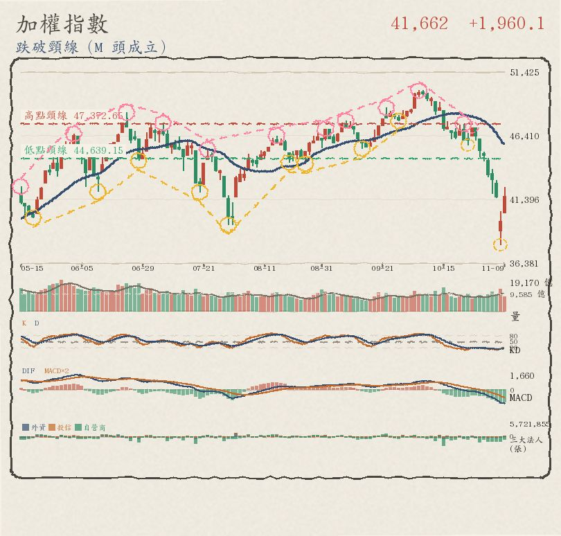
圖說：加權指數日 K（與個股圖相同標記）：黃圈＝轉折低點、粉圈＝轉折高點、虛線小圈＝還沒確認的轉折、藍線＝月線 MA20、水平虛線＝高點／低點頸線。最後一根是資料日當天。
本區塊為公開資料的技術面觀察，不構成投資建議，
不報牌、不預測、不下買賣決策。成交金額為集中市場總成交金額（含 ETF／權證），
與頁首摘要的「上市個股成交金額」口徑不同。標籤是統計，不是評分、也不是推薦。
上市 vs 上櫃（同期快篩）
加權 +2.52% vs 櫃買 +3.42%（同向） → 同向
（兩個市場分開寫，不合併成一個數字；櫃買為 TPEX 公開資料）
櫃買歷史：TPEX 逐日回補 130 根；來源：櫃買中心 www/zh-tw/indexInfo/sectinx（逐日，官方；OpenAPI tpex_index 只回當月）
（TPEX OpenAPI 只回當月，故逐日回補；歷史不足就不算該條均線並標「資料不足」，不用錯數字）
近 20 個交易日大盤狀態回溯（最新在上）（點開看逐日主狀態／量比／量價象限）
用同一支程式回算最近 20 個交易日（主狀態 S1~S8 與量比 20 皆為當日收盤當時的判定，
不是事後調整）；量比 20 未公布的日子寫「—」。
好條件最多的（前 10）
不好條件最多的（前 10）
本期市場狀態：空頭（等權指數在 60 日均線之下）（空頭期間：趨勢類條件反向（回測後 20 日差距 −0.9% ~ −2.1%），本排行改用超跌反轉類（跌破前低／在月線之下／月線下彎））
好條件（4 項）：跌破前低、在月線之下、月線下彎、外資買超。
不好條件（5 項）：站上月線、月線向上、突破頸線、量價攻擊（收紅＋大量）、外資賣超。
兩邊都是同一組資料（日線結構＋當日收盤量價籌碼）算出來的「符合項目數」，只是方向相反；
條件數不是評分、也不是推薦，不構成投資建議。
上升趨勢：底底高 ＋ 頭頭高（2 上市 2／上櫃 0）
量價攻擊（收紅＋大量）（47 上市 37／上櫃 10）
跌破前低（線型轉弱）（60 上市 45／上櫃 15）
逐檔分析（70 檔）
區間或轉弱 成交金額 828.47 億・全榜第 1 名（上市第 1 名）
好條件 3/4：跌破前低、在月線之下、月線下彎
不好條件 2/5：量價攻擊（收紅＋大量）、外資賣超

今天帶量收紅、跌破月線 2362.25，跌破前一個轉折低點（高點頸線 2590 還在收盤上方），轉折還沒走出明顯方向。
- 月線位置：收盤 2285 在月線 2362.25 之下；5 日線 2231 也在月線之下（短均在下）；月線走平或向下、5 日線走平或向下
- 量能：成交量是 20 日均量的 1.08 倍，比 20 日均量大一些；收紅又量增，量價配合
- 關鍵價位：高點頸線 2590 還沒突破、還在收盤上方 11.8%；最近轉折高點 2435（低於 6.2%）；最近轉折低點 2375（低於 3.8%）
- 轉折結構：低點 2350、2375、2375 與高點 2510、2590、2435 都沒有明顯遞增，屬於區間震盪或轉弱；還沒確認的轉折低點 11-04 2235、11-06 2020；還沒確認的轉折高點 10-28 2430、11-09 2290（圖上虛線小圈）
底部墊高、未過前高 成交金額 763.18 億・全榜第 2 名（上市第 2 名）
好條件 3/4：跌破前低、在月線之下、月線下彎
不好條件 2/5：量價攻擊（收紅＋大量）、外資賣超

今天帶量收紅、跌破月線 3992.5，跌破前一個轉折低點（高點頸線 5480 還在收盤上方），底部還在墊高（但高點沒同步創高）。
- 月線位置：收盤 3830 在月線 3992.5 之下；5 日線 3624 也在月線之下（短均在下）；月線走平或向下、5 日線走平或向下
- 量能：成交量是 20 日均量的 2.03 倍，比 20 日均量大不少；收紅又量增，量價配合
- 關鍵價位：高點頸線 5480 還沒突破、還在收盤上方 30.1%；最近轉折高點 4245（低於 9.8%）；最近轉折低點 4875（低於 21.4%）
- 轉折結構：低點 3655、4430、4875 墊高 33.4%（底底高），但高點 5480、5165、4245 沒有同步創高；還沒確認的轉折低點 10-27 3910、11-06 3115；還沒確認的轉折高點 11-02 4070、11-10 4065（圖上虛線小圈）
區間或轉弱 成交金額 328.05 億・全榜第 3 名（上市第 3 名）
好條件 4/4：跌破前低、在月線之下、月線下彎、外資買超
不好條件 1/5：量價攻擊（收紅＋大量）
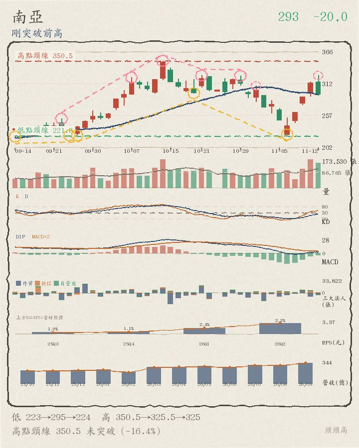
今天帶量收紅、跌破月線 296.25，跌破前一個轉折低點（高點頸線 350.5 還在收盤上方），轉折還沒走出明顯方向。
- 月線位置：收盤 289 在月線 296.25 之下；5 日線 263.4 也在月線之下（短均在下）；月線走平或向下、5 日線走平或向下
- 量能：成交量是 20 日均量的 1.15 倍，比 20 日均量大不少；收紅又量增，量價配合
- 關鍵價位：高點頸線 350.5 還沒突破、還在收盤上方 17.5%；最近轉折高點 325（低於 11.1%）；最近轉折低點 295（低於 2.0%）
- 轉折結構：低點 223、223、295 與高點 350.5、325.5、325 都沒有明顯遞增，屬於區間震盪或轉弱；還沒確認的轉折低點 10-27 290.5、11-06 224.5；還沒確認的轉折高點 11-02 308、11-10 289（圖上虛線小圈）
區間或轉弱 成交金額 287.96 億・全榜第 4 名（上市第 4 名）
好條件 4/4：跌破前低、在月線之下、月線下彎、外資買超
不好條件 1/5：量價攻擊（收紅＋大量）

今天帶量收紅、跌破月線 7439.5，跌破前一個轉折低點（高點頸線 8750 還在收盤上方），轉折還沒走出明顯方向。
- 月線位置：收盤 7170 在月線 7439.5 之下；5 日線 6720 也在月線之下（短均在下）；月線走平或向下、5 日線走平或向下
- 量能：成交量是 20 日均量的 1.78 倍，比 20 日均量大不少；收紅又量增，量價配合
- 關鍵價位：高點頸線 8750 還沒突破、還在收盤上方 18.1%；最近轉折高點 8255（低於 13.1%）；最近轉折低點 7200（低於 0.4%）
- 轉折結構：低點 7730、7065、7200 與高點 8750、8490、8255 都沒有明顯遞增，屬於區間震盪或轉弱；還沒確認的轉折低點 11-04 6390、11-06 5765；還沒確認的轉折高點 11-10 7375（圖上虛線小圈）
底部墊高、未過前高 成交金額 263.22 億・全榜第 5 名（上市第 5 名）
好條件 3/4：跌破前低、在月線之下、月線下彎
不好條件 2/5：量價攻擊（收紅＋大量）、外資賣超
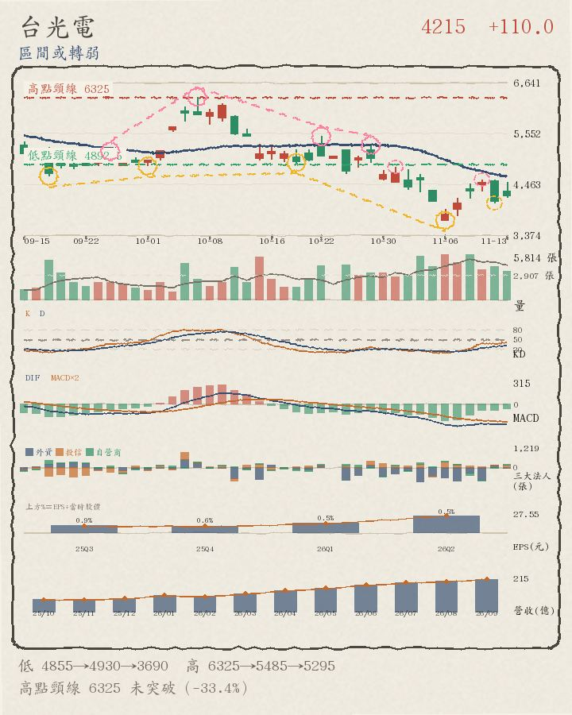
今天帶量收紅、跌破月線 4801，跌破前一個轉折低點（高點頸線 6325 還在收盤上方），底部還在墊高（但高點沒同步創高）。
- 月線位置：收盤 4365 在月線 4801 之下；5 日線 4182 也在月線之下（短均在下）；月線走平或向下、5 日線走平或向下
- 量能：成交量是 20 日均量的 1.69 倍，比 20 日均量大不少；收紅又量增，量價配合
- 關鍵價位：高點頸線 6325 還沒突破、還在收盤上方 31.0%；最近轉折高點 5295（低於 17.6%）；最近轉折低點 4930（低於 11.5%）
- 轉折結構：低點 4635、4855、4930 墊高 6.4%（底底高），但高點 6325、5485、5295 沒有同步創高；還沒確認的轉折低點 10-27 4685、11-06 3690；還沒確認的轉折高點 11-02 4835、11-10 4475（圖上虛線小圈）
區間或轉弱 成交金額 258.8 億・全榜第 6 名（上市第 6 名）
好條件 4/4：跌破前低、在月線之下、月線下彎、外資買超
不好條件 1/5：量價攻擊（收紅＋大量）
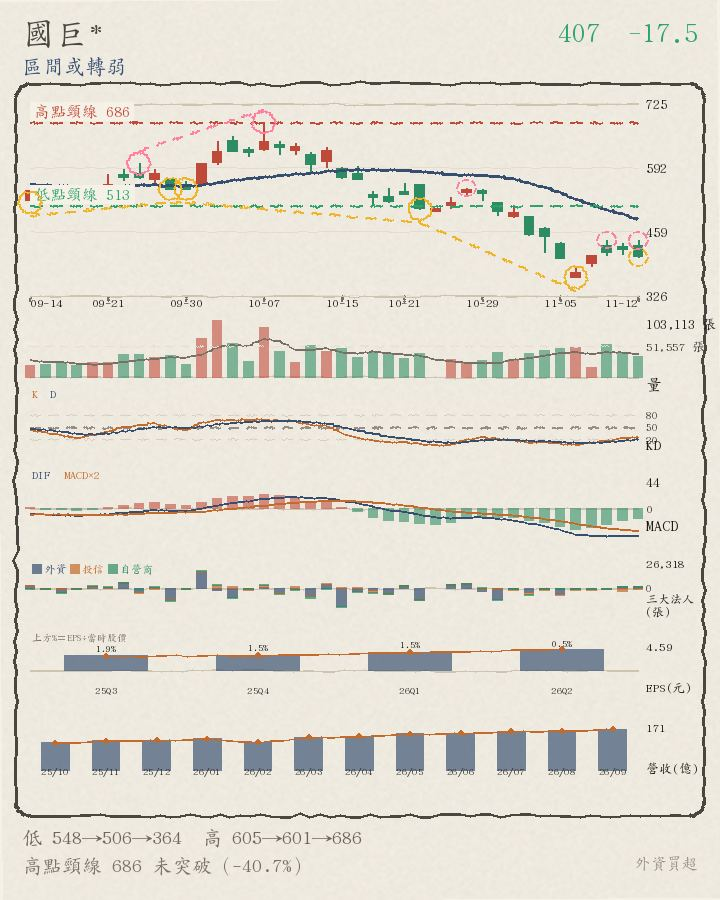
今天帶量收紅、跌破月線 504.925，跌破前一個轉折低點（高點頸線 686 還在收盤上方），轉折還沒走出明顯方向。
- 月線位置：收盤 416.5 在月線 504.925 之下；5 日線 411 也在月線之下（短均在下）；月線走平或向下、5 日線走平或向下
- 量能：成交量是 20 日均量的 1.52 倍，比 20 日均量大不少；收紅又量增，量價配合
- 關鍵價位：高點頸線 686 還沒突破、還在收盤上方 39.3%；最近轉折高點 686（低於 39.3%）；最近轉折低點 506（低於 17.7%）
- 轉折結構：低點 548、548、506 與高點 605、601、686 都沒有明顯遞增，屬於區間震盪或轉弱；還沒確認的轉折低點 10-27 507、11-06 364.5；還沒確認的轉折高點 10-28 550、11-10 442（圖上虛線小圈）
底部墊高、未過前高 成交金額 230.79 億・全榜第 7 名（上市第 7 名）
好條件 4/4：跌破前低、在月線之下、月線下彎、外資買超
不好條件 1/5：量價攻擊（收紅＋大量）
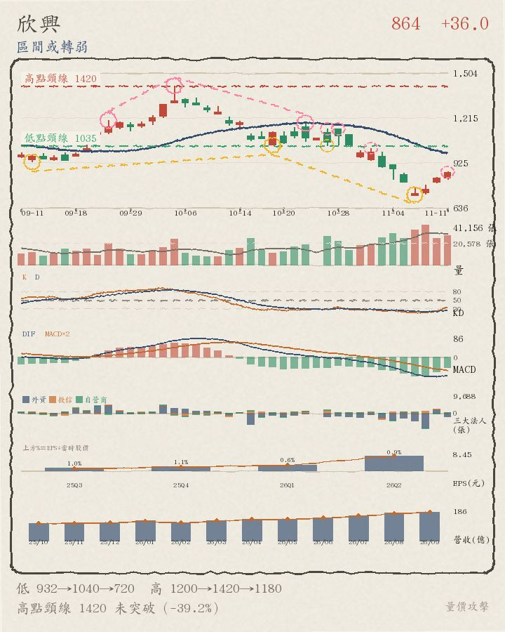
今天帶量收紅、跌破月線 1003.15，跌破前一個轉折低點（高點頸線 1420 還在收盤上方），底部還在墊高（但高點沒同步創高）。
- 月線位置：收盤 828 在月線 1003.15 之下；5 日線 800 也在月線之下（短均在下）；月線走平或向下、5 日線走平或向下
- 量能：成交量是 20 日均量的 1.27 倍，比 20 日均量大不少；收紅又量增，量價配合
- 關鍵價位：高點頸線 1420 還沒突破、還在收盤上方 41.7%；最近轉折高點 1180（低於 29.8%）；最近轉折低點 1040（低於 20.4%）
- 轉折結構：低點 873、932、1040 墊高 19.1%（底底高），但高點 1200、1420、1180 沒有同步創高；還沒確認的轉折低點 10-27 1035、11-06 720；還沒確認的轉折高點 11-02 1020、11-10 832（圖上虛線小圈）
區間或轉弱 成交金額 226.77 億・全榜第 8 名（上市第 8 名）
好條件 4/4：跌破前低、在月線之下、月線下彎、外資買超
不好條件 1/5：量價攻擊（收紅＋大量）
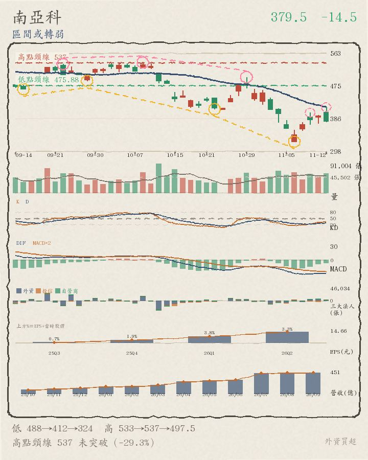
今天帶量收紅、跌破月線 427.55，跌破前一個轉折低點（高點頸線 537 還在收盤上方），轉折還沒走出明顯方向。
- 月線位置：收盤 383 在月線 427.55 之下；5 日線 371.2 也在月線之下（短均在下）；月線走平或向下、5 日線走平或向下
- 量能：成交量是 20 日均量的 1.19 倍，比 20 日均量大不少；收紅又量增，量價配合
- 關鍵價位：高點頸線 537 還沒突破、還在收盤上方 28.7%；最近轉折高點 497.5（低於 23.0%）；最近轉折低點 412（低於 7.0%）
- 轉折結構：低點 465.5、488、412 與高點 533、537、497.5 都沒有明顯遞增，屬於區間震盪或轉弱；還沒確認的轉折低點 11-06 324；還沒確認的轉折高點 11-10 402（圖上虛線小圈）
區間或轉弱 成交金額 209.11 億・全榜第 10 名（上市第 9 名）
好條件 3/4：跌破前低、在月線之下、月線下彎
不好條件 2/5：量價攻擊（收紅＋大量）、外資賣超
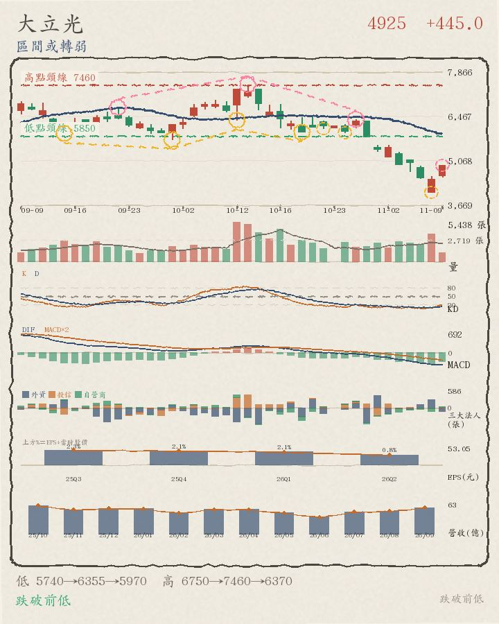
今天帶量收紅、跌破月線 5796，跌破前一個轉折低點（高點頸線 7460 還在收盤上方），轉折還沒走出明顯方向。
- 月線位置：收盤 5065 在月線 5796 之下；5 日線 4801 也在月線之下（短均在下）；月線走平或向下、5 日線走平或向下
- 量能：成交量是 20 日均量的 1.40 倍，比 20 日均量大不少；收紅又量增，量價配合
- 關鍵價位：高點頸線 7460 還沒突破、還在收盤上方 32.1%；最近轉折高點 6370（低於 20.5%）；最近轉折低點 5970（低於 15.2%）
- 轉折結構：低點 5740、6355、5970 與高點 6750、7460、6370 都沒有明顯遞增，屬於區間震盪或轉弱；還沒確認的轉折低點 10-27 5960、11-06 4075；還沒確認的轉折高點 11-10 5290（圖上虛線小圈）
高點墊高、底部不穩 成交金額 208.53 億・全榜第 11 名（上市第 10 名）
好條件 3/4：跌破前低、在月線之下、月線下彎
不好條件 2/5：量價攻擊（收紅＋大量）、外資賣超
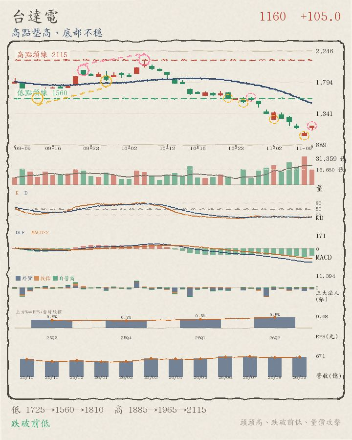
今天帶量收紅、跌破月線 1457.75，跌破前一個轉折低點（高點頸線 2115 還在收盤上方），高點還在墊高（但底部沒同步墊高）。
- 月線位置：收盤 1275 在月線 1457.75 之下；5 日線 1168 也在月線之下（短均在下）；月線走平或向下、5 日線走平或向下
- 量能：成交量是 20 日均量的 1.12 倍，比 20 日均量大一些；收紅又量增，量價配合
- 關鍵價位：高點頸線 2115 還沒突破、還在收盤上方 39.7%；最近轉折高點 2115（低於 39.7%）；最近轉折低點 1810（低於 29.6%）
- 轉折結構：高點 1885、1965、2115 墊高 12.2%（頭頭高），但低點 1725、1560、1810 沒有同步墊高；還沒確認的轉折低點 11-02 1255、11-06 1020；還沒確認的轉折高點 10-28 1575、11-10 1275（圖上虛線小圈）
區間或轉弱 成交金額 207.87 億・全榜第 12 名（上市第 11 名）
好條件 2/4：在月線之下、月線下彎
不好條件 2/5：量價攻擊（收紅＋大量）、外資賣超
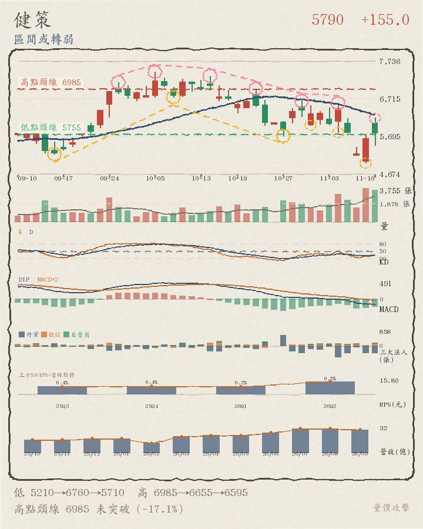
今天帶量收紅、跌破月線 6282.75，離高點頸線 6985 還差 17.1%，轉折還沒走出明顯方向。
- 月線位置：收盤 5790 在月線 6282.75 之下；5 日線 5781 也在月線之下（短均在下）；月線走平或向下、5 日線走平或向下
- 量能：成交量是 20 日均量的 2.05 倍，比 20 日均量大不少；收紅又量增，量價配合
- 關鍵價位：高點頸線 6985 還沒突破，差 17.1%；最近轉折高點 6595（低於 12.2%）；最近轉折低點 5710（高於 1.4%）
- 轉折結構：低點 5210、6760、5710 與高點 6985、6655、6595 都沒有明顯遞增，屬於區間震盪或轉弱；還沒確認的轉折低點 11-04 5800、11-09 4970；還沒確認的轉折高點 11-10 6190（圖上虛線小圈）
區間或轉弱 成交金額 204.29 億・全榜第 13 名（上市第 12 名）
好條件 3/4：跌破前低、在月線之下、月線下彎
不好條件 2/5：量價攻擊（收紅＋大量）、外資賣超
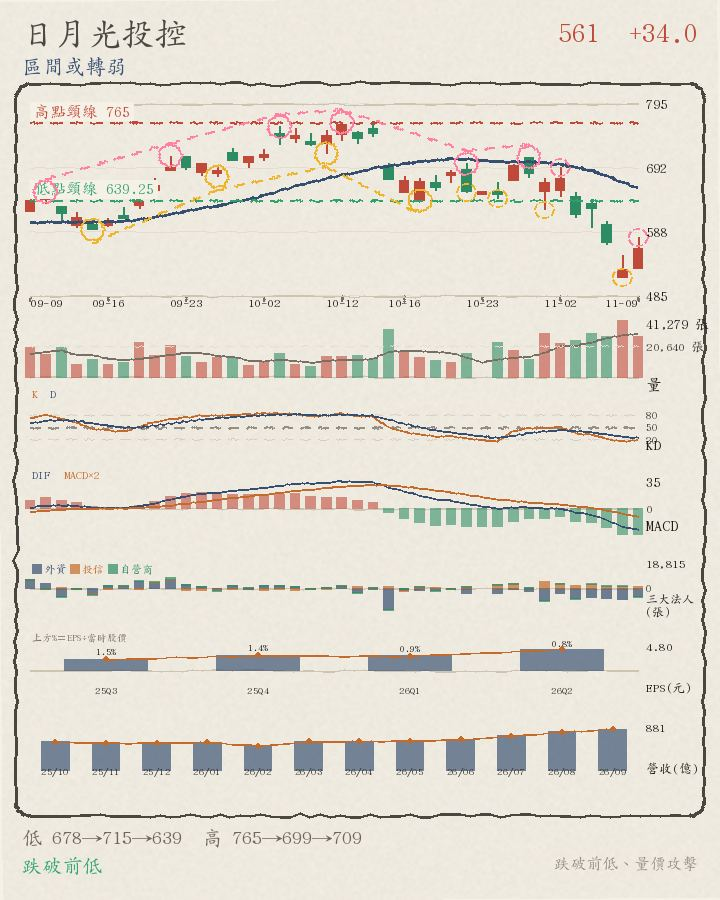
今天帶量收紅、跌破月線 651.6，跌破前一個轉折低點（高點頸線 765 還在收盤上方），轉折還沒走出明顯方向。
- 月線位置：收盤 605 在月線 651.6 之下；5 日線 578.4 也在月線之下（短均在下）；月線走平或向下、5 日線走平或向下
- 量能：成交量是 20 日均量的 1.52 倍，比 20 日均量大不少；收紅又量增，量價配合
- 關鍵價位：高點頸線 765 還沒突破、還在收盤上方 20.9%；最近轉折高點 709（低於 14.7%）；最近轉折低點 639（低於 5.3%）
- 轉折結構：低點 678、715、639 與高點 765、699、709 都沒有明顯遞增，屬於區間震盪或轉弱；還沒確認的轉折低點 10-30 624、11-06 515；還沒確認的轉折高點 11-02 692、11-10 617（圖上虛線小圈）
底部墊高、未過前高 成交金額 164.35 億・全榜第 15 名（上市第 13 名）
好條件 3/4：跌破前低、在月線之下、月線下彎
不好條件 2/5：量價攻擊（收紅＋大量）、外資賣超

今天帶量收紅、跌破月線 118.555，跌破前一個轉折低點（高點頸線 168.5 還在收盤上方），底部還在墊高（但高點沒同步創高）。
- 月線位置：收盤 100.5 在月線 118.555 之下；5 日線 98.62 也在月線之下（短均在下）；月線走平或向下、5 日線走平或向下
- 量能：成交量是 20 日均量的 1.09 倍，比 20 日均量大一些；收紅又量增，量價配合
- 關鍵價位：高點頸線 168.5 還沒突破、還在收盤上方 40.4%；最近轉折高點 165（低於 39.1%）；最近轉折低點 151.5（低於 33.7%）
- 轉折結構：低點 123、135、151.5 墊高 23.2%（底底高），但高點 145.5、168.5、165 沒有同步創高；還沒確認的轉折低點 10-30 107、11-06 88.6；還沒確認的轉折高點 10-28 128.5、11-10 103.5（圖上虛線小圈）
世芯-KY 3661 上市
3420 +310.0
區間或轉弱 成交金額 158.77 億・全榜第 16 名（上市第 14 名）
好條件 3/4：在月線之下、月線下彎、外資買超
不好條件 1/5：量價攻擊（收紅＋大量）
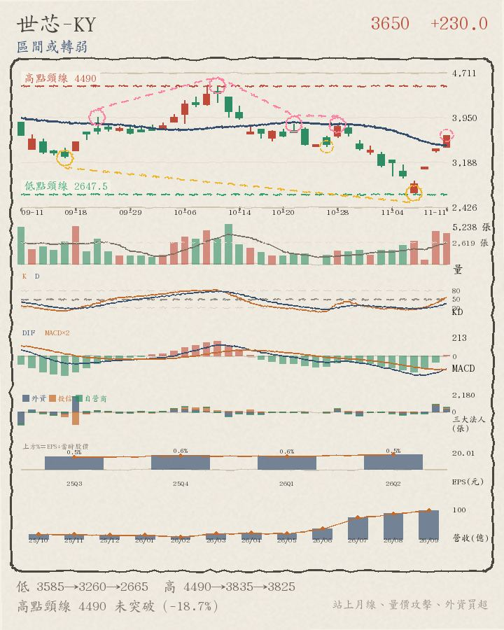
今天帶量收紅、跌破月線 3493.75，離高點頸線 4490 還差 23.8%，轉折還沒走出明顯方向。
- 月線位置：收盤 3420 在月線 3493.75 之下；5 日線 3100 也在月線之下（短均在下）；月線走平或向下、5 日線走平或向下
- 量能：成交量是 20 日均量的 2.43 倍，比 20 日均量大不少；收紅又量增，量價配合
- 關鍵價位：高點頸線 4490 還沒突破，差 23.8%；最近轉折高點 3825（低於 10.6%）；最近轉折低點 3260（高於 4.9%）
- 轉折結構：低點 2630、3585、3260 與高點 4490、3835、3825 都沒有明顯遞增，屬於區間震盪或轉弱；還沒確認的轉折低點 10-27 3455、11-06 2665；還沒確認的轉折高點 11-10 3420（圖上虛線小圈）
底部墊高、未過前高 成交金額 124.64 億・全榜第 18 名（上市第 15 名）
好條件 3/4：跌破前低、在月線之下、月線下彎
不好條件 2/5：量價攻擊（收紅＋大量）、外資賣超
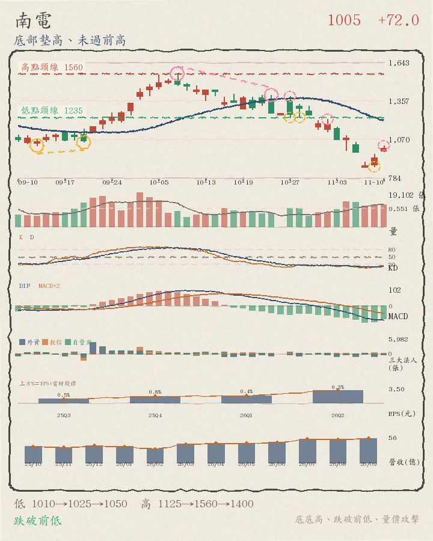
今天帶量收紅、跌破月線 1212，跌破前一個轉折低點（高點頸線 1560 還在收盤上方），底部還在墊高（但高點沒同步創高）。
- 月線位置：收盤 1005 在月線 1212 之下；5 日線 973 也在月線之下（短均在下）；月線走平或向下、5 日線走平或向下
- 量能：成交量是 20 日均量的 1.35 倍，比 20 日均量大不少；收紅又量增，量價配合
- 關鍵價位：高點頸線 1560 還沒突破、還在收盤上方 35.6%；最近轉折高點 1400（低於 28.2%）；最近轉折低點 1050（低於 4.3%）
- 轉折結構：低點 1010、1025、1050 墊高 4.0%（底底高），但高點 1125、1560、1400 沒有同步創高；還沒確認的轉折低點 10-28 1235、11-09 867；還沒確認的轉折高點 11-02 1220、11-10 1025（圖上虛線小圈）
底部墊高、未過前高 成交金額 119.4 億・全榜第 20 名（上市第 16 名）
好條件 1/4：外資買超
不好條件 3/5：站上月線、月線向上、量價攻擊（收紅＋大量）
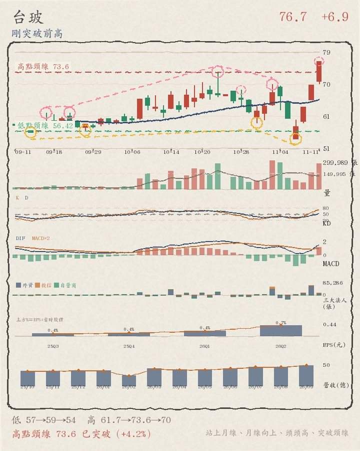
今天帶量收紅、站上月線 64.88，離高點頸線 73.6 還差 5.2%，底部還在墊高（但高點沒同步創高）。
- 月線位置：收盤 69.8 在月線 64.88 之上；5 日線 63.58 也在月線之下（短均在下）；月線向上、5 日線走平或向下
- 量能：成交量是 20 日均量的 1.21 倍，比 20 日均量大不少；收紅又量增，量價配合
- 關鍵價位：高點頸線 73.6 還沒突破，差 5.2%；最近轉折高點 70（低於 0.3%）；最近轉折低點 58.8（高於 18.7%）
- 轉折結構：低點 56、56.6、58.8 墊高 5.0%（底底高），但高點 61.7、73.6、70 沒有同步創高；還沒確認的轉折低點 11-06 54.1；還沒確認的轉折高點 10-28 68.4、11-10 69.8（圖上虛線小圈）
區間或轉弱 成交金額 119.2 億・全榜第 21 名（上市第 17 名）
好條件 3/4：跌破前低、在月線之下、月線下彎
不好條件 2/5：量價攻擊（收紅＋大量）、外資賣超
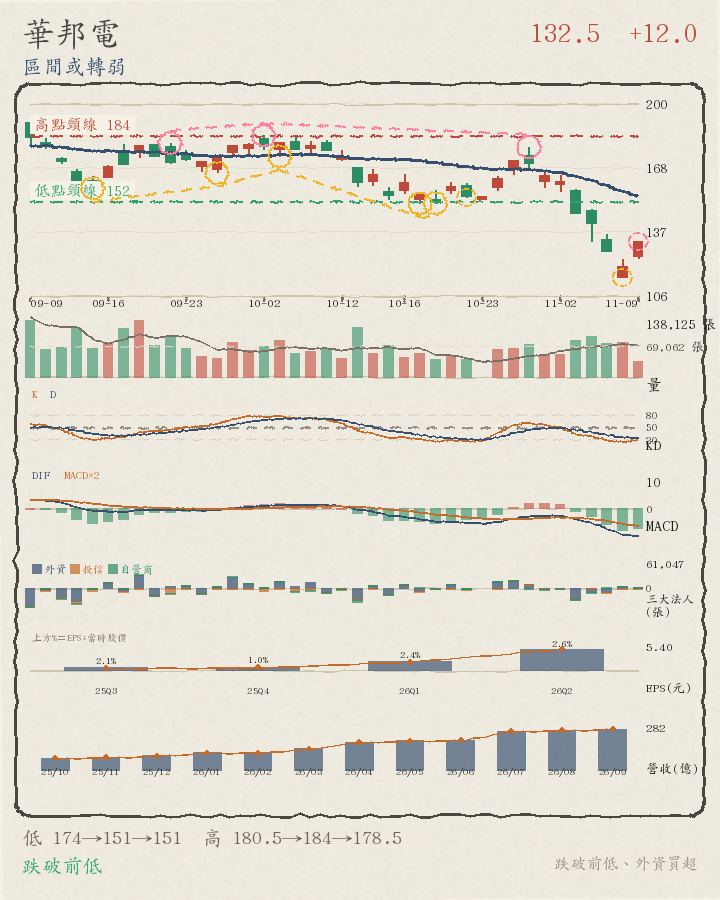
今天帶量收紅、跌破月線 152.725，跌破前一個轉折低點（高點頸線 184 還在收盤上方），轉折還沒走出明顯方向。
- 月線位置：收盤 135 在月線 152.725 之下；5 日線 131.4 也在月線之下（短均在下）；月線走平或向下、5 日線走平或向下
- 量能：成交量是 20 日均量的 1.32 倍，比 20 日均量大不少；收紅又量增，量價配合
- 關鍵價位：高點頸線 184 還沒突破、還在收盤上方 26.6%；最近轉折高點 178.5（低於 24.4%）；最近轉折低點 151（低於 10.6%）
- 轉折結構：低點 174、151、151 與高點 180.5、184、178.5 都沒有明顯遞增，屬於區間震盪或轉弱；還沒確認的轉折低點 11-06 115；還沒確認的轉折高點 11-10 142（圖上虛線小圈）
區間或轉弱 成交金額 112.11 億・全榜第 22 名（上市第 18 名）
好條件 3/4：跌破前低、在月線之下、月線下彎
不好條件 2/5：量價攻擊（收紅＋大量）、外資賣超
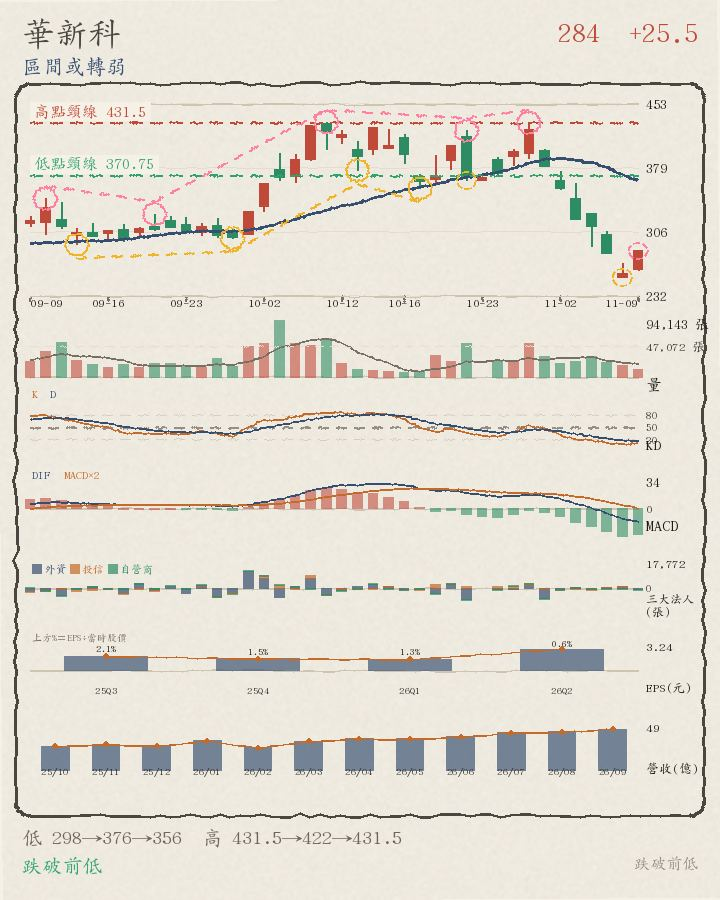
今天帶量收紅、跌破月線 358.425，跌破前一個轉折低點（高點頸線 431.5 還在收盤上方），轉折還沒走出明顯方向。
- 月線位置：收盤 288.5 在月線 358.425 之下；5 日線 284.9 也在月線之下（短均在下）；月線走平或向下、5 日線走平或向下
- 量能：成交量是 20 日均量的 1.56 倍，比 20 日均量大不少；收紅又量增，量價配合
- 關鍵價位：高點頸線 431.5 還沒突破、還在收盤上方 33.1%；最近轉折高點 431.5（低於 33.1%）；最近轉折低點 355.5（低於 18.8%）
- 轉折結構：低點 298.5、376.5、355.5 與高點 431.5、422、431.5 都沒有明顯遞增，屬於區間震盪或轉弱；還沒確認的轉折低點 11-06 253.5；還沒確認的轉折高點 11-10 306.5（圖上虛線小圈）
區間或轉弱 成交金額 110.56 億・全榜第 23 名（上市第 19 名）
好條件 4/4：跌破前低、在月線之下、月線下彎、外資買超
不好條件 1/5：量價攻擊（收紅＋大量）

今天帶量收紅、跌破月線 1083.85，跌破前一個轉折低點（高點頸線 1310 還在收盤上方），轉折還沒走出明顯方向。
- 月線位置：收盤 983 在月線 1083.85 之下；5 日線 904.4 也在月線之下（短均在下）；月線走平或向下、5 日線走平或向下
- 量能：成交量是 20 日均量的 1.08 倍，比 20 日均量大一些；收紅又量增，量價配合
- 關鍵價位：高點頸線 1310 還沒突破、還在收盤上方 25.0%；最近轉折高點 1190（低於 17.4%）；最近轉折低點 1120（低於 12.2%）
- 轉折結構：低點 1030、950、1120 與高點 1310、1295、1190 都沒有明顯遞增，屬於區間震盪或轉弱；還沒確認的轉折低點 10-27 1055、11-06 782；還沒確認的轉折高點 11-02 1080、11-10 983（圖上虛線小圈）
區間或轉弱 成交金額 110.16 億・全榜第 24 名（上市第 20 名）
好條件 3/4：在月線之下、月線下彎、外資買超
不好條件 1/5：量價攻擊（收紅＋大量）

今天收紅、跌破月線 242.825，離高點頸線 266.5 還差 9.4%，轉折還沒走出明顯方向。
- 月線位置：收盤 241.5 在月線 242.825 之下；5 日線 236 也在月線之下（短均在下）；月線走平或向下、5 日線走平或向下
- 量能：成交量是 20 日均量的 1.03 倍，跟 20 日均量差不多
- 關鍵價位：高點頸線 266.5 還沒突破，差 9.4%；最近轉折高點 253.5（低於 4.7%）；最近轉折低點 237（高於 1.9%）
- 轉折結構：低點 243.5、247、237 與高點 257、266.5、253.5 都沒有明顯遞增，屬於區間震盪或轉弱；還沒確認的轉折低點 10-30 240、11-06 212.5；還沒確認的轉折高點 11-02 252、11-10 247.5（圖上虛線小圈）
臻鼎-KY 4958 上市
430.5 +32.5
底部墊高、未過前高 成交金額 106.22 億・全榜第 26 名（上市第 21 名）
好條件 4/4：跌破前低、在月線之下、月線下彎、外資買超
不好條件 0/5：無

今天收紅、但成交量比平均少、跌破月線 501.775，跌破前一個轉折低點（高點頸線 614 還在收盤上方），底部還在墊高（但高點沒同步創高）。
- 月線位置：收盤 430.5 在月線 501.775 之下；5 日線 405.7 也在月線之下（短均在下）；月線走平或向下、5 日線走平或向下
- 量能：成交量是 20 日均量的 0.89 倍，比 20 日均量少一些；收紅但量縮，量價背離
- 關鍵價位：高點頸線 614 還沒突破、還在收盤上方 29.9%；最近轉折高點 614（低於 29.9%）；最近轉折低點 518（低於 16.9%）
- 轉折結構：低點 446.5、463.5、518 墊高 16.0%（底底高），但高點 505、613、614 沒有同步創高；還沒確認的轉折低點 10-27 519、11-06 355；還沒確認的轉折高點 11-02 499、11-10 437.5（圖上虛線小圈）
區間或轉弱 成交金額 104.64 億・全榜第 27 名（上市第 22 名）
好條件 4/4：跌破前低、在月線之下、月線下彎、外資買超
不好條件 1/5：量價攻擊（收紅＋大量）
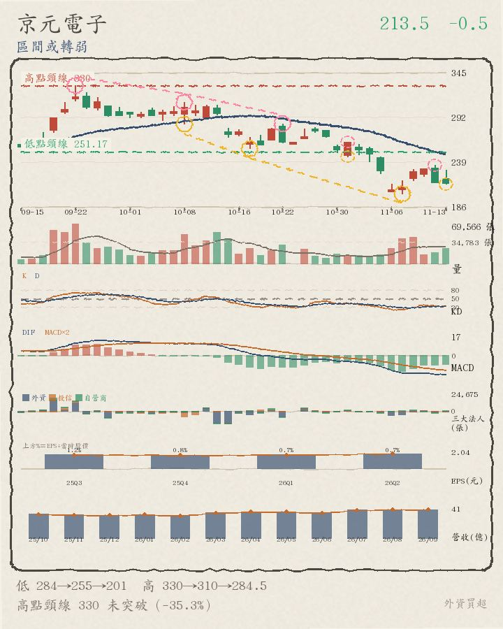
今天帶量收紅、跌破月線 259.025，跌破前一個轉折低點（高點頸線 330 還在收盤上方），轉折還沒走出明顯方向。
- 月線位置：收盤 227.5 在月線 259.025 之下；5 日線 224 也在月線之下（短均在下）；月線走平或向下、5 日線走平或向下
- 量能：成交量是 20 日均量的 1.88 倍，比 20 日均量大不少；收紅又量增，量價配合
- 關鍵價位：高點頸線 330 還沒突破、還在收盤上方 31.1%；最近轉折高點 284.5（低於 20.0%）；最近轉折低點 255（低於 10.8%）
- 轉折結構：低點 253、284、255 與高點 330、310、284.5 都沒有明顯遞增，屬於區間震盪或轉弱；還沒確認的轉折低點 11-02 245.5、11-09 201；還沒確認的轉折高點 11-02 263、11-10 230（圖上虛線小圈）
區間或轉弱 成交金額 100.49 億・全榜第 29 名（上市第 23 名）
好條件 3/4：跌破前低、在月線之下、月線下彎
不好條件 2/5：量價攻擊（收紅＋大量）、外資賣超

今天帶量收紅、跌破月線 1725.25，跌破前一個轉折低點（高點頸線 2145 還在收盤上方），轉折還沒走出明顯方向。
- 月線位置：收盤 1545 在月線 1725.25 之下；5 日線 1418 也在月線之下（短均在下）；月線走平或向下、5 日線走平或向下
- 量能：成交量是 20 日均量的 1.59 倍，比 20 日均量大不少；收紅又量增，量價配合
- 關鍵價位：高點頸線 2145 還沒突破、還在收盤上方 28.0%；最近轉折高點 1875（低於 17.6%）；最近轉折低點 1910（低於 19.1%）
- 轉折結構：低點 1770、1970、1910 與高點 2145、2055、1875 都沒有明顯遞增，屬於區間震盪或轉弱；還沒確認的轉折低點 10-27 1740、11-06 1245；還沒確認的轉折高點 11-10 1545（圖上虛線小圈）
區間或轉弱 成交金額 98.52 億・全榜第 30 名（上市第 24 名）
好條件 3/4：跌破前低、在月線之下、月線下彎
不好條件 2/5：量價攻擊（收紅＋大量）、外資賣超
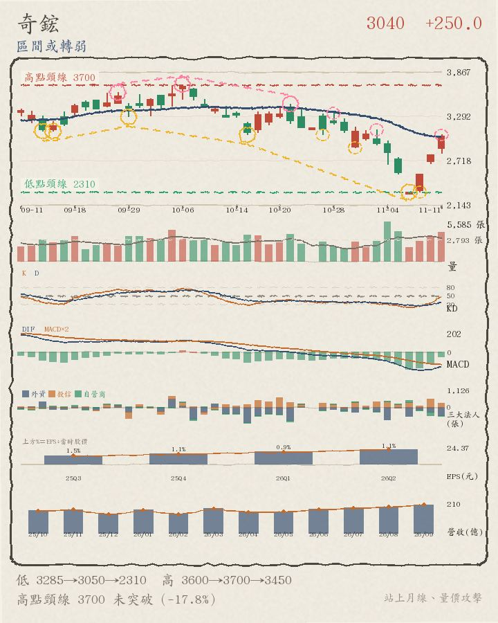
今天帶量收紅、跌破月線 3036.5，跌破前一個轉折低點（高點頸線 3700 還在收盤上方），轉折還沒走出明顯方向。
- 月線位置：收盤 2790 在月線 3036.5 之下；5 日線 2605 也在月線之下（短均在下）；月線走平或向下、5 日線走平或向下
- 量能：成交量是 20 日均量的 1.26 倍，比 20 日均量大不少；收紅又量增，量價配合
- 關鍵價位：高點頸線 3700 還沒突破、還在收盤上方 24.6%；最近轉折高點 3450（低於 19.1%）；最近轉折低點 3050（低於 8.5%）
- 轉折結構：低點 3100、3285、3050 與高點 3600、3700、3450 都沒有明顯遞增，屬於區間震盪或轉弱；還沒確認的轉折低點 11-06 2310、11-09 2310；還沒確認的轉折高點 11-03 3115、11-10 2790（圖上虛線小圈）
剛突破前高 成交金額 92.07 億・全榜第 31 名（上市第 25 名）
好條件 0/4：無
不好條件 3/5：站上月線、月線向上、外資賣超
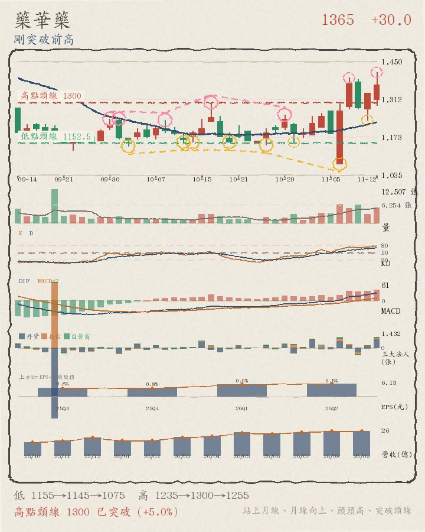
今天帶量收黑、站上月線 1211，離高點頸線 1300 還差 1.5%，高點還在墊高（但底部沒同步墊高）。
- 月線位置：收盤 1280 在月線 1211 之上；5 日線 1271 也在月線之上（短均在上）；月線向上、5 日線向上
- 量能：成交量是 20 日均量的 2.83 倍，比 20 日均量大不少；收黑卻量增，量價背離
- 關鍵價位：高點頸線 1300 還沒突破，差 1.5%；最近轉折高點 1255（高於 2.0%）；最近轉折低點 1145（高於 11.8%）
- 轉折結構：高點 1235、1300、1255 墊高 10.8%（頭頭高），但低點 1155、1155、1145 沒有同步墊高；還沒確認的轉折低點 11-06 1075、11-10 1275；還沒確認的轉折高點 11-09 1390（圖上虛線小圈）
區間或轉弱 成交金額 81.99 億・全榜第 32 名（上市第 26 名）
好條件 3/4：跌破前低、在月線之下、月線下彎
不好條件 2/5：量價攻擊（收紅＋大量）、外資賣超
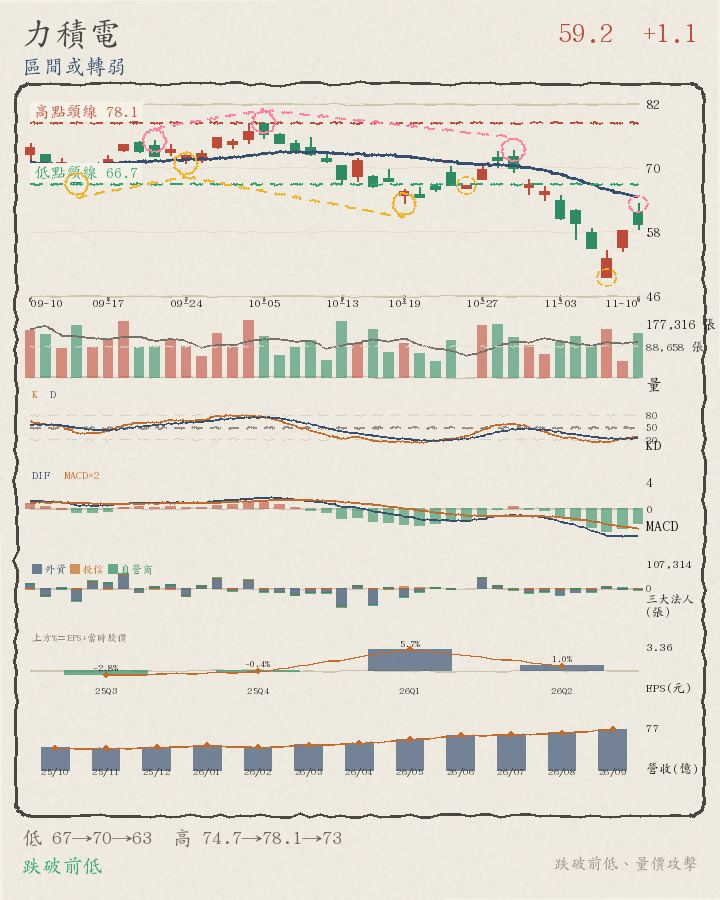
今天帶量收紅、跌破月線 64.355，跌破前一個轉折低點（高點頸線 78.1 還在收盤上方），轉折還沒走出明顯方向。
- 月線位置：收盤 59.2 在月線 64.355 之下；5 日線 56.88 也在月線之下（短均在下）；月線走平或向下、5 日線走平或向下
- 量能：成交量是 20 日均量的 1.26 倍，比 20 日均量大不少；收紅又量增，量價配合
- 關鍵價位：高點頸線 78.1 還沒突破、還在收盤上方 24.2%；最近轉折高點 73（低於 18.9%）；最近轉折低點 63（低於 6.0%）
- 轉折結構：低點 66.7、70.5、63 與高點 74.7、78.1、73 都沒有明顯遞增，屬於區間震盪或轉弱；還沒確認的轉折低點 10-23 66.4、11-06 49.35；還沒確認的轉折高點 11-10 63（圖上虛線小圈）
區間或轉弱 成交金額 80.11 億・全榜第 33 名（上市第 27 名）
好條件 3/4：跌破前低、在月線之下、月線下彎
不好條件 1/5：外資賣超
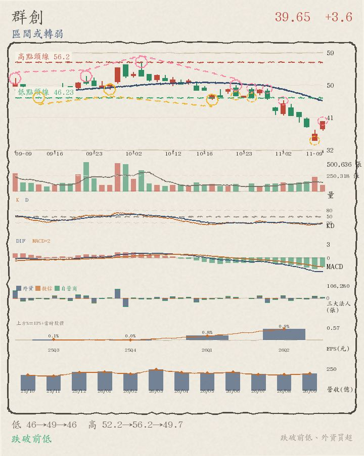
今天帶量收黑、跌破月線 44.8，跌破前一個轉折低點（高點頸線 56.2 還在收盤上方），轉折還沒走出明顯方向。
- 月線位置：收盤 39.2 在月線 44.8 之下；5 日線 38.76 也在月線之下（短均在下）；月線走平或向下、5 日線走平或向下
- 量能：成交量是 20 日均量的 1.63 倍，比 20 日均量大不少；收黑卻量增，量價背離
- 關鍵價位：高點頸線 56.2 還沒突破、還在收盤上方 30.2%；最近轉折高點 49.7（低於 21.1%）；最近轉折低點 45.65（低於 14.1%）
- 轉折結構：低點 46.25、48.55、45.65 與高點 52.2、56.2、49.7 都沒有明顯遞增，屬於區間震盪或轉弱；還沒確認的轉折低點 10-27 46.25、11-06 34.2；還沒確認的轉折高點 11-02 45.35、11-10 41.4（圖上虛線小圈）
區間或轉弱 成交金額 71.4 億・全榜第 35 名（上市第 28 名）
好條件 3/4：跌破前低、在月線之下、月線下彎
不好條件 2/5：量價攻擊（收紅＋大量）、外資賣超
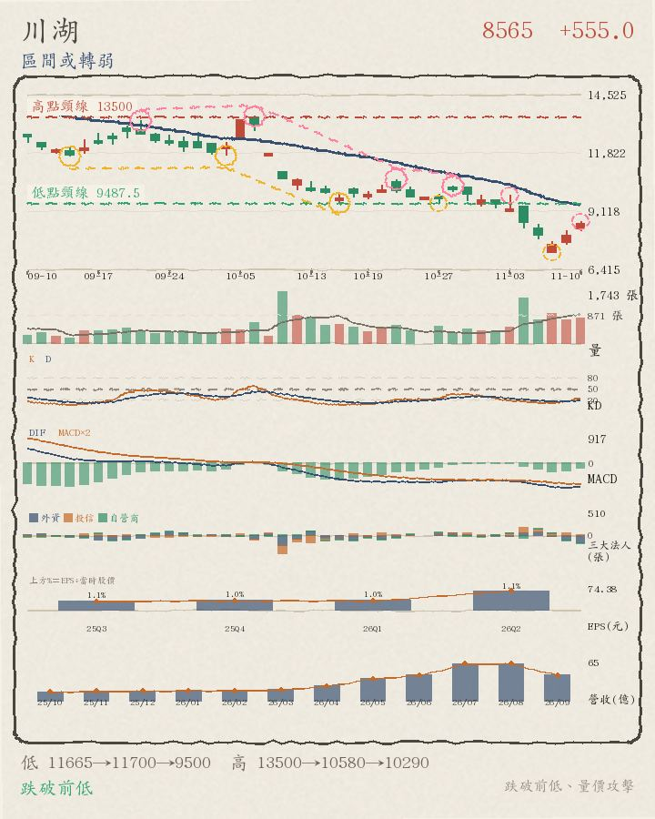
今天帶量收紅、跌破月線 9411.75，跌破前一個轉折低點（高點頸線 13500 還在收盤上方），轉折還沒走出明顯方向。
- 月線位置：收盤 8565 在月線 9411.75 之下；5 日線 8147 也在月線之下（短均在下）；月線走平或向下、5 日線走平或向下
- 量能：成交量是 20 日均量的 1.33 倍，比 20 日均量大不少；收紅又量增，量價配合
- 關鍵價位：高點頸線 13500 還沒突破、還在收盤上方 36.6%；最近轉折高點 10290（低於 16.8%）；最近轉折低點 9500（低於 9.8%）
- 轉折結構：低點 11665、11700、9500 與高點 13500、10580、10290 都沒有明顯遞增，屬於區間震盪或轉弱；還沒確認的轉折低點 10-27 9475、11-06 7200；還沒確認的轉折高點 11-03 9850、11-10 8645（圖上虛線小圈）
底部墊高、未過前高 成交金額 69.86 億・全榜第 36 名（上市第 29 名）
好條件 3/4：跌破前低、在月線之下、月線下彎
不好條件 1/5：外資賣超
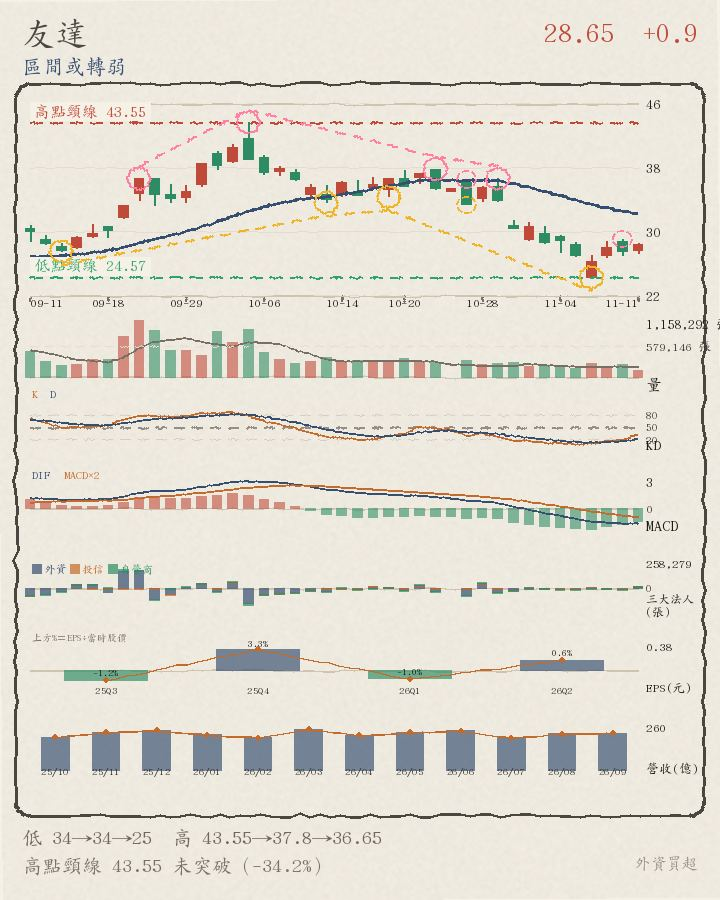
今天收黑、成交量也比平均少、跌破月線 32.688，跌破前一個轉折低點（高點頸線 43.55 還在收盤上方），底部還在墊高（但高點沒同步創高）。
- 月線位置：收盤 27.7 在月線 32.688 之下；5 日線 27.76 也在月線之下（短均在下）；月線走平或向下、5 日線走平或向下
- 量能：成交量是 20 日均量的 0.86 倍，比 20 日均量少一些
- 關鍵價位：高點頸線 43.55 還沒突破、還在收盤上方 36.4%；最近轉折高點 36.65（低於 24.4%）；最近轉折低點 34.45（低於 19.6%）
- 轉折結構：低點 27.75、33.75、34.45 墊高 24.1%（底底高），但高點 43.55、37.8、36.65 沒有同步創高；還沒確認的轉折低點 10-27 33.45、11-06 24.55；還沒確認的轉折高點 10-27 36.55、11-10 29.25（圖上虛線小圈）
區間或轉弱 成交金額 65.61 億・全榜第 37 名（上市第 30 名）
好條件 3/4：跌破前低、在月線之下、月線下彎
不好條件 1/5：外資賣超
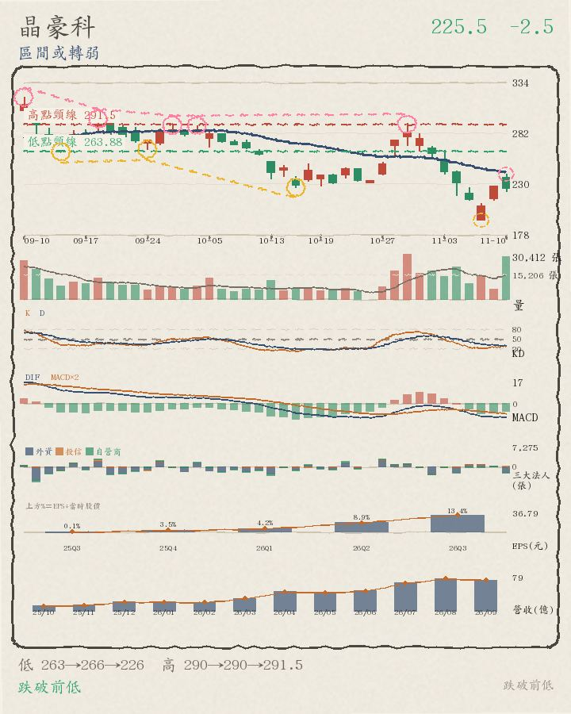
今天帶量收黑、跌破月線 242.125，跌破前一個轉折低點（高點頸線 291.5 還在收盤上方），轉折還沒走出明顯方向。
- 月線位置：收盤 225.5 在月線 242.125 之下；5 日線 221.3 也在月線之下（短均在下）；月線走平或向下、5 日線走平或向下
- 量能：成交量是 20 日均量的 2.37 倍，比 20 日均量大不少；收黑卻量增，量價背離
- 關鍵價位：高點頸線 291.5 還沒突破、還在收盤上方 22.6%；最近轉折高點 291.5（低於 22.6%）；最近轉折低點 226.5（低於 0.4%）
- 轉折結構：低點 263、265.5、226.5 與高點 290、290、291.5 都沒有明顯遞增，屬於區間震盪或轉弱；還沒確認的轉折低點 11-06 193；還沒確認的轉折高點 11-10 240（圖上虛線小圈）
區間或轉弱 成交金額 64.28 億・全榜第 38 名（上市第 31 名）
好條件 3/4：跌破前低、在月線之下、月線下彎
不好條件 2/5：量價攻擊（收紅＋大量）、外資賣超
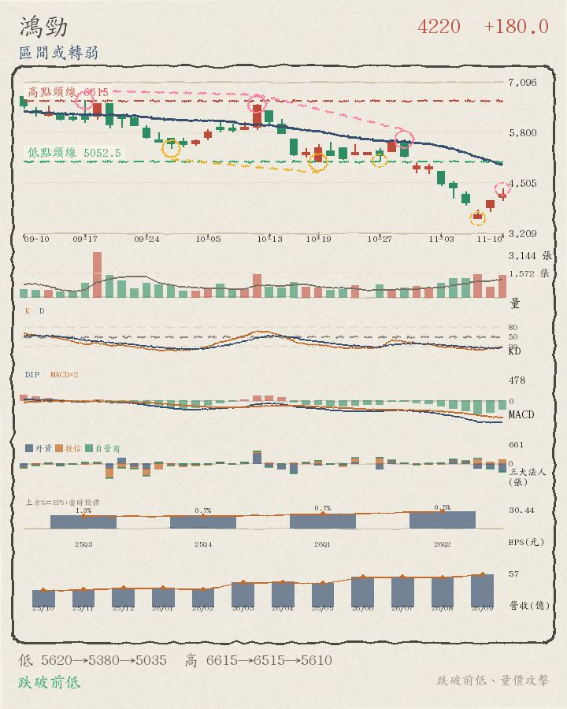
今天帶量收紅、跌破月線 4961.25，跌破前一個轉折低點（高點頸線 6615 還在收盤上方），轉折還沒走出明顯方向。
- 月線位置：收盤 4220 在月線 4961.25 之下；5 日線 4056 也在月線之下（短均在下）；月線走平或向下、5 日線走平或向下
- 量能：成交量是 20 日均量的 1.80 倍，比 20 日均量大不少；收紅又量增，量價配合
- 關鍵價位：高點頸線 6615 還沒突破、還在收盤上方 36.2%；最近轉折高點 5610（低於 24.8%）；最近轉折低點 5035（低於 16.2%）
- 轉折結構：低點 5620、5380、5035 與高點 6615、6515、5610 都沒有明顯遞增，屬於區間震盪或轉弱；還沒確認的轉折低點 10-27 5070、11-06 3585；還沒確認的轉折高點 11-10 4345（圖上虛線小圈）
區間或轉弱 成交金額 62.91 億・全榜第 39 名（上市第 32 名）
好條件 3/4：跌破前低、在月線之下、月線下彎
不好條件 1/5：外資賣超
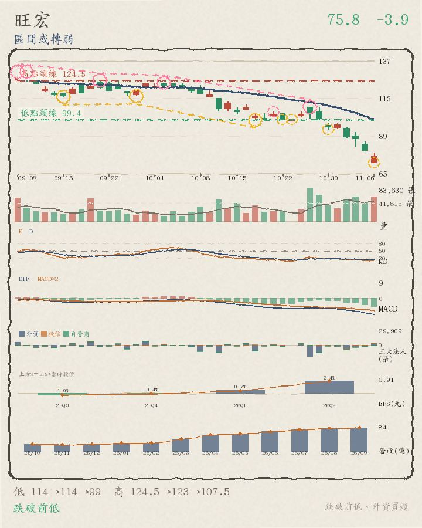
今天帶量收黑、跌破月線 96.325，跌破前一個轉折低點（高點頸線 124.5 還在收盤上方），轉折還沒走出明顯方向。
- 月線位置：收盤 82.1 在月線 96.325 之下；5 日線 81.62 也在月線之下（短均在下）；月線走平或向下、5 日線走平或向下
- 量能：成交量是 20 日均量的 1.83 倍，比 20 日均量大不少；收黑卻量增，量價背離
- 關鍵價位：高點頸線 124.5 還沒突破、還在收盤上方 34.1%；最近轉折高點 107.5（低於 23.6%）；最近轉折低點 99.2（低於 17.2%）
- 轉折結構：低點 114、114.5、99.2 與高點 124.5、123、107.5 都沒有明顯遞增，屬於區間震盪或轉弱；還沒確認的轉折低點 10-30 93.2、11-06 71.8；還沒確認的轉折高點 11-10 88.2（圖上虛線小圈）
區間或轉弱 成交金額 62.89 億・全榜第 40 名（上市第 33 名）
好條件 4/4：跌破前低、在月線之下、月線下彎、外資買超
不好條件 1/5：量價攻擊（收紅＋大量）
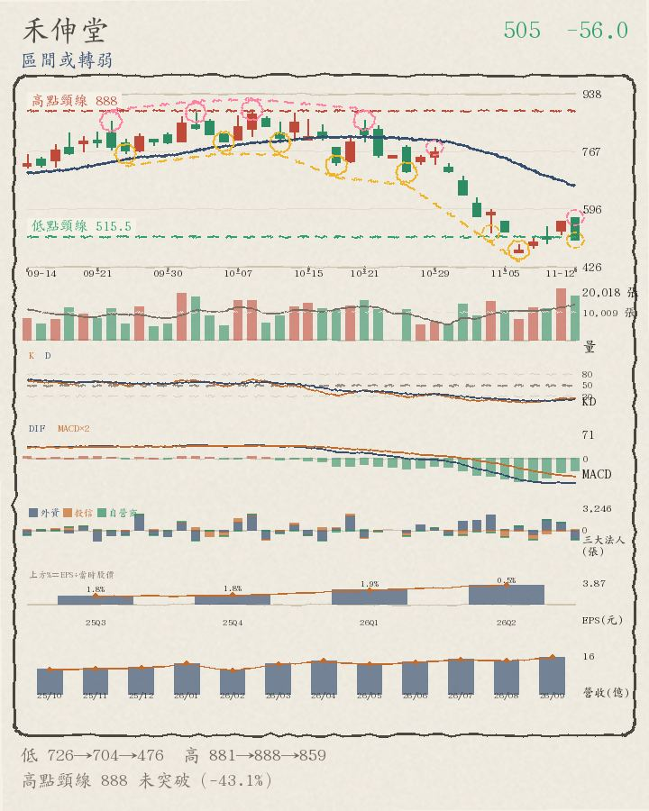
今天帶量收紅、跌破月線 693.675，跌破前一個轉折低點（高點頸線 888 還在收盤上方），轉折還沒走出明顯方向。
- 月線位置：收盤 510 在月線 693.675 之下；5 日線 519.7 也在月線之下（短均在下）；月線走平或向下、5 日線走平或向下
- 量能：成交量是 20 日均量的 1.11 倍，比 20 日均量大一些；收紅又量增，量價配合
- 關鍵價位：高點頸線 888 還沒突破、還在收盤上方 42.6%；最近轉折高點 859（低於 40.6%）；最近轉折低點 704（低於 27.6%）
- 轉折結構：低點 793、726、704 與高點 881、888、859 都沒有明顯遞增，屬於區間震盪或轉弱；還沒確認的轉折低點 11-04 526、11-06 475.5；還沒確認的轉折高點 10-29 778、11-10 544（圖上虛線小圈）
底部墊高、未過前高 成交金額 62.62 億・全榜第 41 名（上市第 34 名）
好條件 4/4：跌破前低、在月線之下、月線下彎、外資買超
不好條件 0/5：無
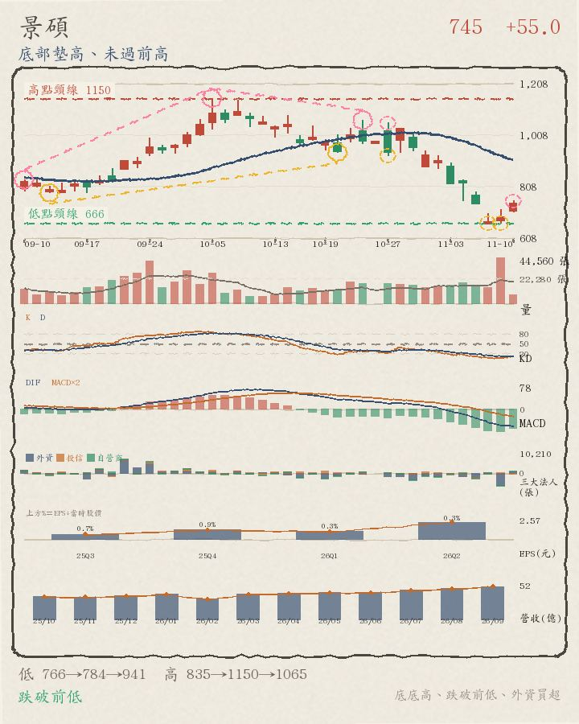
今天收紅、但成交量比平均少、跌破月線 912.1，跌破前一個轉折低點（高點頸線 1150 還在收盤上方），底部還在墊高（但高點沒同步創高）。
- 月線位置：收盤 745 在月線 912.1 之下；5 日線 733.6 也在月線之下（短均在下）；月線走平或向下、5 日線走平或向下
- 量能：成交量是 20 日均量的 0.50 倍，比 20 日均量少很多；收紅但量縮，量價背離
- 關鍵價位：高點頸線 1150 還沒突破、還在收盤上方 35.2%；最近轉折高點 1065（低於 30.0%）；最近轉折低點 941（低於 20.8%）
- 轉折結構：低點 766、784、941 墊高 22.8%（底底高），但高點 835、1150、1065 沒有同步創高；還沒確認的轉折低點 11-06 666、11-09 666；還沒確認的轉折高點 10-27 1055、11-10 752（圖上虛線小圈）
貿聯-KY 3665 上市
1530 +110.0
區間或轉弱 成交金額 60.52 億・全榜第 42 名（上市第 35 名）
好條件 3/4：跌破前低、在月線之下、月線下彎
不好條件 2/5：量價攻擊（收紅＋大量）、外資賣超
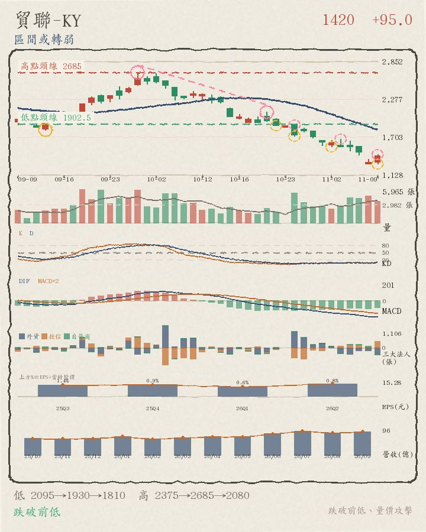
今天帶量收紅、跌破月線 1775.75，跌破前一個轉折低點（高點頸線 2685 還在收盤上方），轉折還沒走出明顯方向。
- 月線位置：收盤 1530 在月線 1775.75 之下；5 日線 1463 也在月線之下（短均在下）；月線走平或向下、5 日線走平或向下
- 量能：成交量是 20 日均量的 1.34 倍，比 20 日均量大不少；收紅又量增，量價配合
- 關鍵價位：高點頸線 2685 還沒突破、還在收盤上方 43.0%；最近轉折高點 2080（低於 26.4%）；最近轉折低點 1810（低於 15.5%）
- 轉折結構：低點 2095、1930、1810 與高點 2375、2685、2080 都沒有明顯遞增，屬於區間震盪或轉弱；還沒確認的轉折低點 11-02 1555、11-09 1295；還沒確認的轉折高點 11-03 1675、11-10 1550（圖上虛線小圈）
區間或轉弱 成交金額 60.48 億・全榜第 43 名（上市第 36 名）
好條件 3/4：跌破前低、在月線之下、月線下彎
不好條件 2/5：量價攻擊（收紅＋大量）、外資賣超
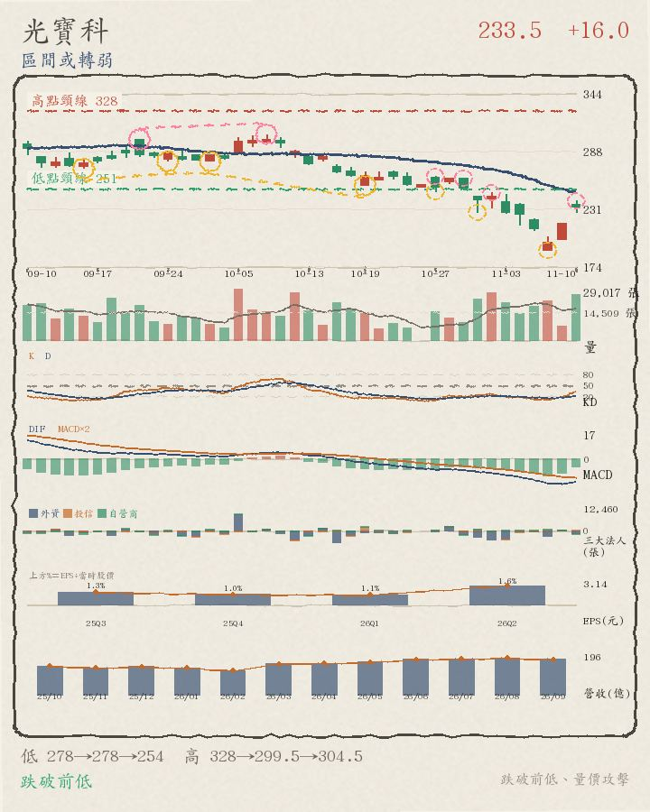
今天帶量收紅、跌破月線 247.825，跌破前一個轉折低點（高點頸線 328 還在收盤上方），轉折還沒走出明顯方向。
- 月線位置：收盤 233.5 在月線 247.825 之下；5 日線 217.3 也在月線之下（短均在下）；月線走平或向下、5 日線走平或向下
- 量能：成交量是 20 日均量的 1.63 倍，比 20 日均量大不少；收紅又量增，量價配合
- 關鍵價位：高點頸線 328 還沒突破、還在收盤上方 28.8%；最近轉折高點 304.5（低於 23.3%）；最近轉折低點 254（低於 8.1%）
- 轉折結構：低點 278、278、254 與高點 328、299.5、304.5 都沒有明顯遞增，屬於區間震盪或轉弱；還沒確認的轉折低點 10-30 228、11-06 190.5；還沒確認的轉折高點 11-02 247、11-10 239（圖上虛線小圈）
騰輝電子-KY 6672 上市
504 +11.0
底部墊高、未過前高 成交金額 59.91 億・全榜第 44 名（上市第 37 名）
好條件 4/4：跌破前低、在月線之下、月線下彎、外資買超
不好條件 1/5：量價攻擊（收紅＋大量）
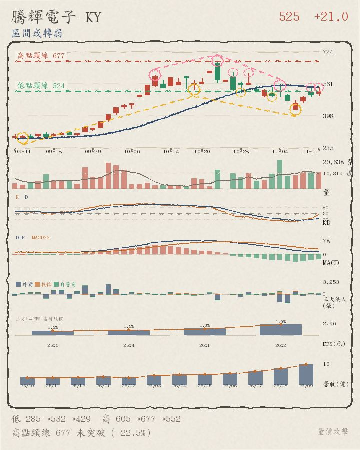
今天帶量收紅、跌破月線 544.825，跌破前一個轉折低點（高點頸線 677 還在收盤上方），底部還在墊高（但高點沒同步創高）。
- 月線位置：收盤 504 在月線 544.825 之下；5 日線 493.1 也在月線之下（短均在下）；月線走平或向下、5 日線走平或向下
- 量能：成交量是 20 日均量的 1.61 倍，比 20 日均量大不少；收紅又量增，量價配合
- 關鍵價位：高點頸線 677 還沒突破、還在收盤上方 25.6%；最近轉折高點 552（低於 8.7%）；最近轉折低點 532（低於 5.3%）
- 轉折結構：低點 261.5、285、532 墊高 103.4%（底底高），但高點 605、677、552 沒有同步創高；還沒確認的轉折低點 11-03 493.5、11-06 429；還沒確認的轉折高點 10-29 617、11-10 542（圖上虛線小圈）
區間或轉弱 成交金額 58.65 億・全榜第 45 名（上市第 38 名）
好條件 3/4：跌破前低、在月線之下、月線下彎
不好條件 1/5：外資賣超
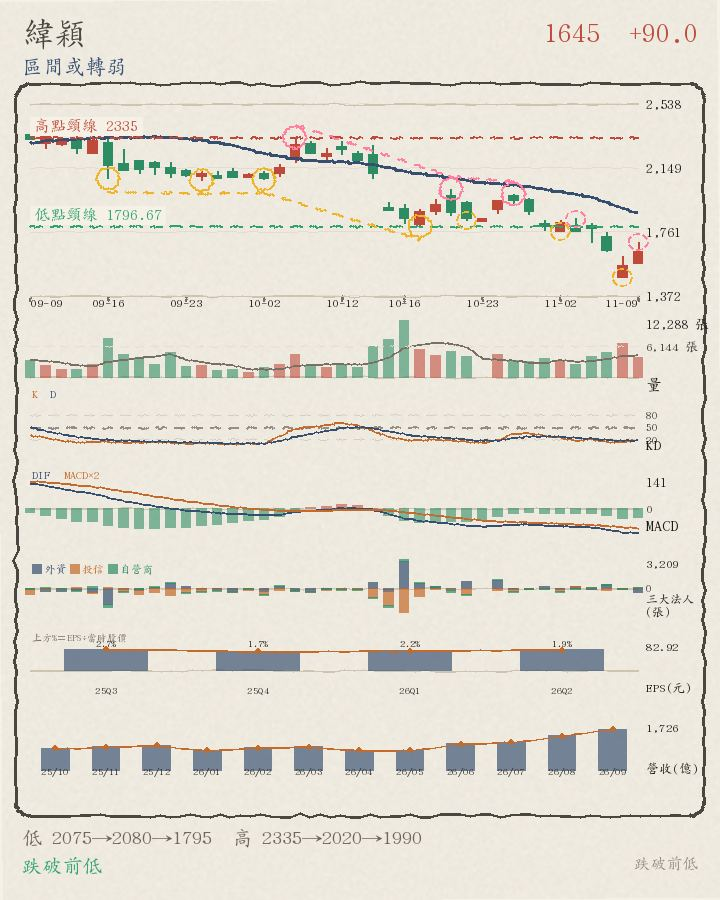
今天收紅、但成交量比平均少、跌破月線 1846.5，跌破前一個轉折低點（高點頸線 2335 還在收盤上方），轉折還沒走出明顯方向。
- 月線位置：收盤 1680 在月線 1846.5 之下；5 日線 1663 也在月線之下（短均在下）；月線走平或向下、5 日線走平或向下
- 量能：成交量是 20 日均量的 0.67 倍，比 20 日均量少很多；收紅但量縮，量價背離
- 關鍵價位：高點頸線 2335 還沒突破、還在收盤上方 28.1%；最近轉折高點 1990（低於 15.6%）；最近轉折低點 1795（低於 6.4%）
- 轉折結構：低點 2075、2080、1795 與高點 2335、2020、1990 都沒有明顯遞增，屬於區間震盪或轉弱；還沒確認的轉折低點 11-02 1765、11-06 1485；還沒確認的轉折高點 11-03 1840、11-10 1730（圖上虛線小圈）
上升趨勢（底底高＋頭頭高） 成交金額 56.94 億・全榜第 46 名（上市第 39 名）
好條件 4/4：跌破前低、在月線之下、月線下彎、外資買超
不好條件 1/5：量價攻擊（收紅＋大量）
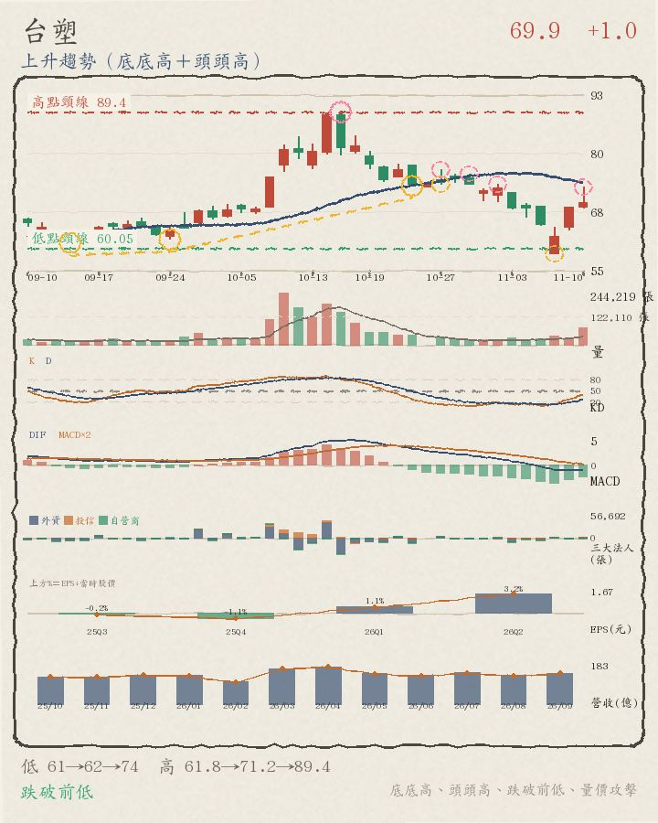
今天帶量收紅、跌破月線 74.25，跌破前一個轉折低點（高點頸線 89.4 還在收盤上方），轉折結構仍是底底高＋頭頭高。
- 月線位置：收盤 69.9 在月線 74.25 之下；5 日線 67.14 也在月線之下（短均在下）；月線走平或向下、5 日線走平或向下
- 量能：成交量是 20 日均量的 1.24 倍，比 20 日均量大不少；收紅又量增，量價配合
- 關鍵價位：高點頸線 89.4 還沒突破、還在收盤上方 21.8%；最近轉折高點 89.4（低於 21.8%）；最近轉折低點 73.5（低於 4.9%）
- 轉折結構：低點 61.2、62、73.5 一路墊高 20.1%、高點 61.8、71.2、89.4 也一路墊高 44.7%，是底底高＋頭頭高；還沒確認的轉折低點 10-27 73.8、11-06 58.9；還沒確認的轉折高點 11-02 73.9、11-10 73.2（圖上虛線小圈）
高點墊高、底部不穩 成交金額 56.29 億・全榜第 47 名（上市第 40 名）
好條件 3/4：跌破前低、在月線之下、月線下彎
不好條件 1/5：外資賣超
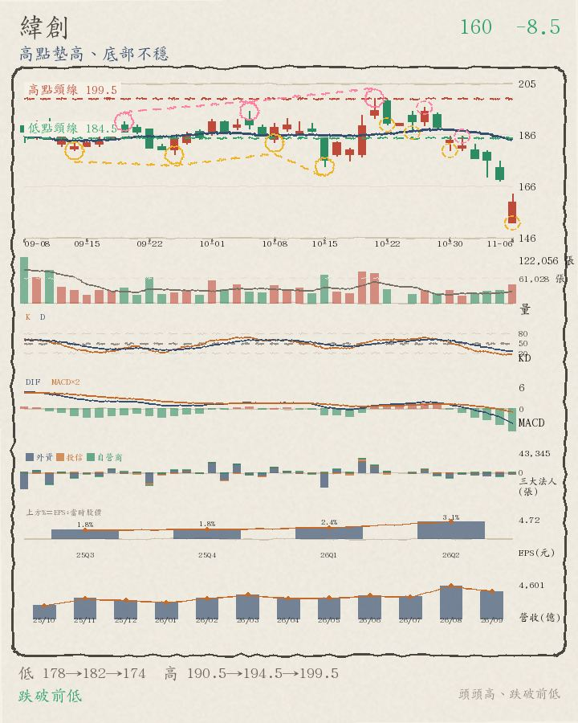
今天收紅、但成交量比平均少、跌破月線 181.775，跌破前一個轉折低點（高點頸線 199.5 還在收盤上方），高點還在墊高（但底部沒同步墊高）。
- 月線位置：收盤 171 在月線 181.775 之下；5 日線 168.8 也在月線之下（短均在下）；月線走平或向下、5 日線走平或向下
- 量能：成交量是 20 日均量的 0.86 倍，比 20 日均量少一些；收紅但量縮，量價背離
- 關鍵價位：高點頸線 199.5 還沒突破、還在收盤上方 14.3%；最近轉折高點 199.5（低於 14.3%）；最近轉折低點 173.5（低於 1.4%）
- 轉折結構：高點 190.5、194.5、199.5 墊高 4.7%（頭頭高），但低點 178、182.5、173.5 沒有同步墊高；還沒確認的轉折低點 10-30 179.5、11-06 152；還沒確認的轉折高點 11-02 185、11-09 174.5（圖上虛線小圈）
區間或轉弱 成交金額 55.24 億・全榜第 48 名（上市第 41 名）
好條件 4/4：跌破前低、在月線之下、月線下彎、外資買超
不好條件 0/5：無
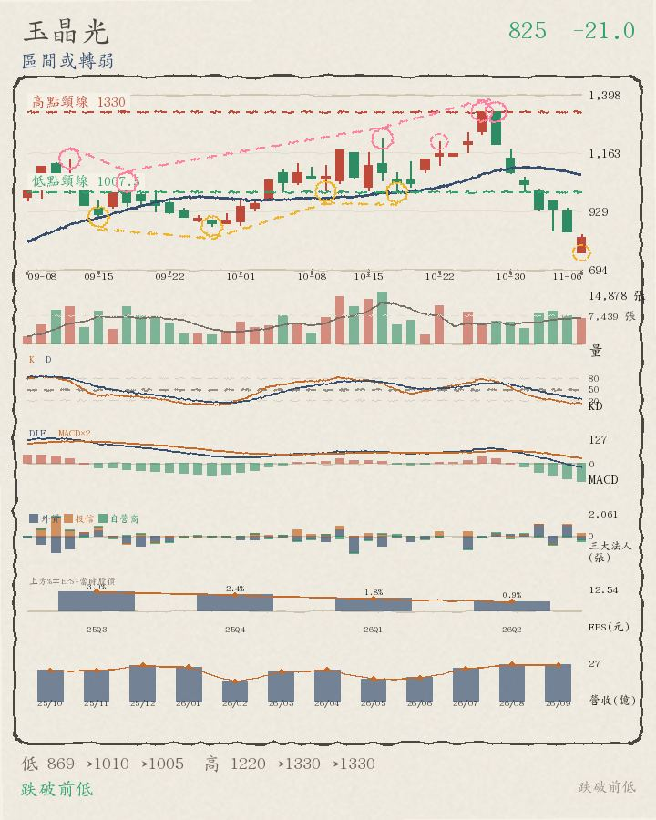
今天收紅、但成交量比平均少、跌破月線 1056.85，跌破前一個轉折低點（高點頸線 1330 還在收盤上方），轉折還沒走出明顯方向。
- 月線位置：收盤 905 在月線 1056.85 之下；5 日線 871.2 也在月線之下（短均在下）；月線走平或向下、5 日線走平或向下
- 量能：成交量是 20 日均量的 0.72 倍，比 20 日均量少很多；收紅但量縮，量價背離
- 關鍵價位：高點頸線 1330 還沒突破、還在收盤上方 32.0%；最近轉折高點 1330（低於 32.0%）；最近轉折低點 1005（低於 10.0%）
- 轉折結構：低點 869、1010、1005 與高點 1220、1330、1330 都沒有明顯遞增，屬於區間震盪或轉弱；還沒確認的轉折低點 11-06 762；還沒確認的轉折高點 11-10 925（圖上虛線小圈）
區間或轉弱 成交金額 53.46 億・全榜第 49 名（上市第 42 名）
好條件 4/4：跌破前低、在月線之下、月線下彎、外資買超
不好條件 1/5：量價攻擊（收紅＋大量）
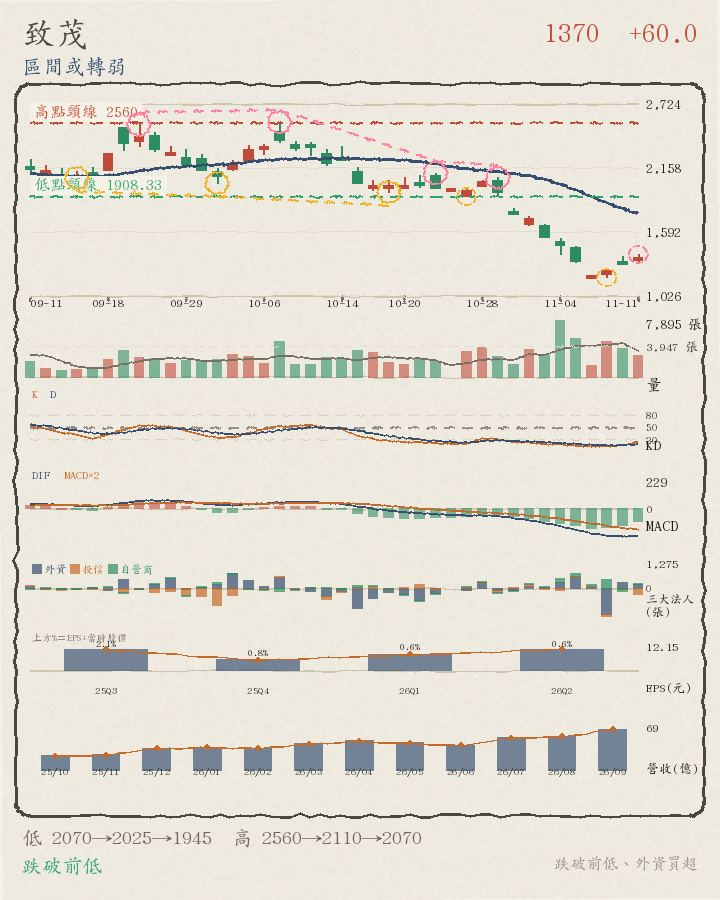
今天帶量收紅、跌破月線 1798.5，跌破前一個轉折低點（高點頸線 2560 還在收盤上方），轉折還沒走出明顯方向。
- 月線位置：收盤 1310 在月線 1798.5 之下；5 日線 1314 也在月線之下（短均在下）；月線走平或向下、5 日線走平或向下
- 量能：成交量是 20 日均量的 1.23 倍，比 20 日均量大不少；收紅又量增，量價配合
- 關鍵價位：高點頸線 2560 還沒突破、還在收盤上方 48.8%；最近轉折高點 2070（低於 36.7%）；最近轉折低點 1945（低於 32.6%）
- 轉折結構：低點 2070、2025、1945 與高點 2560、2110、2070 都沒有明顯遞增，屬於區間震盪或轉弱；還沒確認的轉折低點 10-27 1905、11-09 1190；還沒確認的轉折高點 11-10 1375（圖上虛線小圈）
區間或轉弱 成交金額 52.89 億・全榜第 50 名（上市第 43 名）
好條件 4/4：跌破前低、在月線之下、月線下彎、外資買超
不好條件 1/5：量價攻擊（收紅＋大量）
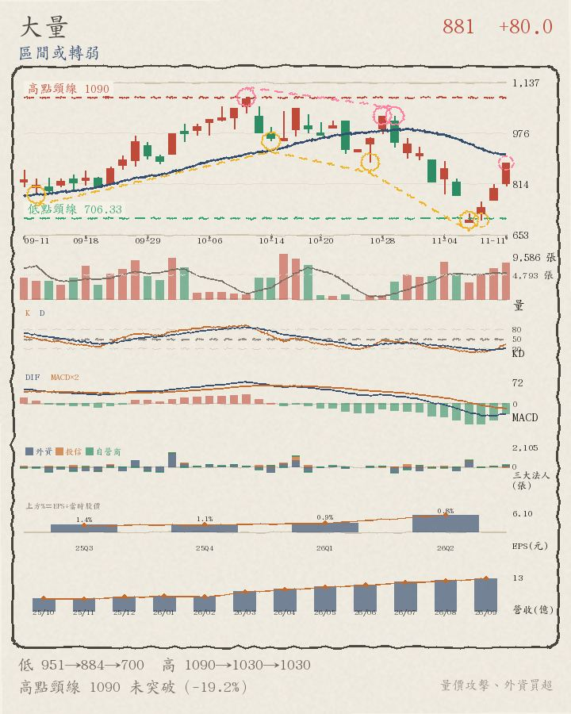
今天帶量收紅、跌破月線 912.55，跌破前一個轉折低點（高點頸線 1090 還在收盤上方），轉折還沒走出明顯方向。
- 月線位置：收盤 801 在月線 912.55 之下；5 日線 776 也在月線之下（短均在下）；月線走平或向下、5 日線走平或向下
- 量能：成交量是 20 日均量的 1.59 倍，比 20 日均量大不少；收紅又量增，量價配合
- 關鍵價位：高點頸線 1090 還沒突破、還在收盤上方 26.5%；最近轉折高點 1030（低於 22.2%）；最近轉折低點 884（低於 9.4%）
- 轉折結構：低點 781、951、884 與高點 1090、1030、1030 都沒有明顯遞增，屬於區間震盪或轉弱；還沒確認的轉折低點 11-06 700、11-09 700；還沒確認的轉折高點 11-10 812（圖上虛線小圈）
區間或轉弱 成交金額 51.82 億・全榜第 51 名（上市第 44 名）
好條件 3/4：跌破前低、在月線之下、月線下彎
不好條件 2/5：量價攻擊（收紅＋大量）、外資賣超
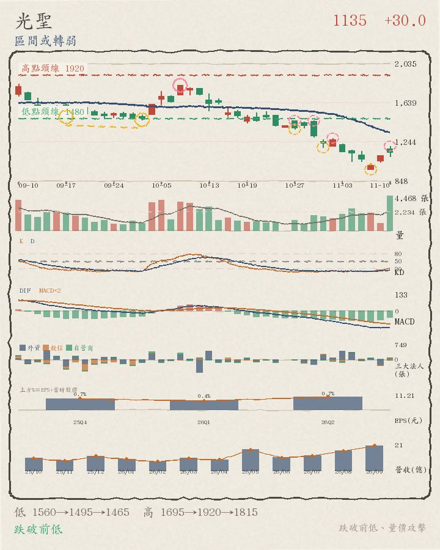
今天帶量收紅、跌破月線 1337.75，跌破前一個轉折低點（高點頸線 1920 還在收盤上方），轉折還沒走出明顯方向。
- 月線位置：收盤 1135 在月線 1337.75 之下；5 日線 1089 也在月線之下（短均在下）；月線走平或向下、5 日線走平或向下
- 量能：成交量是 20 日均量的 2.69 倍，比 20 日均量大不少；收紅又量增，量價配合
- 關鍵價位：高點頸線 1920 還沒突破、還在收盤上方 40.9%；最近轉折高點 1815（低於 37.5%）；最近轉折低點 1465（低於 22.5%）
- 轉折結構：低點 1560、1495、1465 與高點 1695、1920、1815 都沒有明顯遞增，屬於區間震盪或轉弱；還沒確認的轉折低點 10-30 1185、11-06 963；還沒確認的轉折高點 11-02 1280、11-10 1200（圖上虛線小圈）
區間或轉弱 成交金額 51.17 億・全榜第 52 名（上市第 45 名）
好條件 3/4：跌破前低、在月線之下、月線下彎
不好條件 2/5：量價攻擊（收紅＋大量）、外資賣超
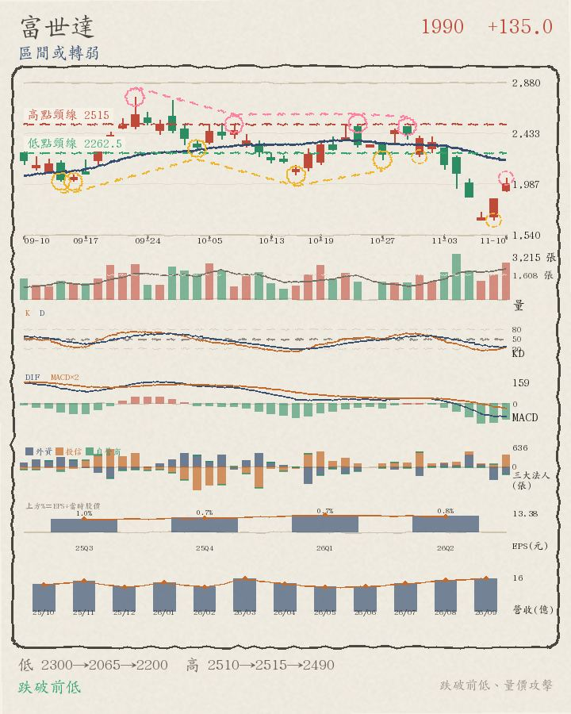
今天帶量收紅、跌破月線 2199，跌破前一個轉折低點（高點頸線 2515 還在收盤上方），轉折還沒走出明顯方向。
- 月線位置：收盤 1990 在月線 2199 之下；5 日線 1898 也在月線之下（短均在下）；月線走平或向下、5 日線走平或向下
- 量能：成交量是 20 日均量的 1.63 倍，比 20 日均量大不少；收紅又量增，量價配合
- 關鍵價位：高點頸線 2515 還沒突破、還在收盤上方 20.9%；最近轉折高點 2490（低於 20.1%）；最近轉折低點 2200（低於 9.5%）
- 轉折結構：低點 2300、2065、2200 與高點 2510、2515、2490 都沒有明顯遞增，屬於區間震盪或轉弱；還沒確認的轉折低點 10-30 2225、11-09 1670；還沒確認的轉折高點 11-10 2040（圖上虛線小圈）
上升趨勢（底底高＋頭頭高） 成交金額 49.43 億・全榜第 54 名（上市第 46 名）
好條件 4/4：跌破前低、在月線之下、月線下彎、外資買超
不好條件 0/5：無
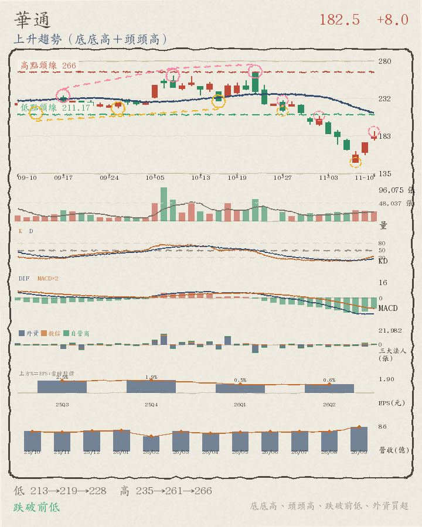
今天收紅、但成交量比平均少、跌破月線 213.075，跌破前一個轉折低點（高點頸線 266 還在收盤上方），轉折結構仍是底底高＋頭頭高。
- 月線位置：收盤 182.5 在月線 213.075 之下；5 日線 172.8 也在月線之下（短均在下）；月線走平或向下、5 日線走平或向下
- 量能：成交量是 20 日均量的 0.92 倍，比 20 日均量少一些；收紅但量縮，量價背離
- 關鍵價位：高點頸線 266 還沒突破、還在收盤上方 31.4%；最近轉折高點 266（低於 31.4%）；最近轉折低點 228（低於 20.0%）
- 轉折結構：低點 213、219、228 一路墊高 7.0%、高點 235、261、266 也一路墊高 13.2%，是底底高＋頭頭高；還沒確認的轉折低點 10-27 215、11-06 149；還沒確認的轉折高點 11-02 209、11-10 189（圖上虛線小圈）
區間或轉弱 成交金額 49.15 億・全榜第 55 名（上市第 47 名）
好條件 4/4：跌破前低、在月線之下、月線下彎、外資買超
不好條件 0/5：無
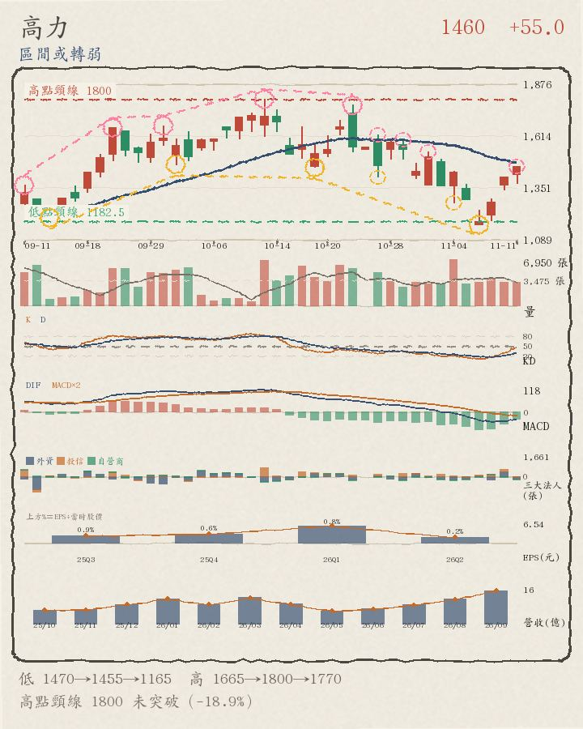
今天收紅、但成交量比平均少、跌破月線 1491.25，跌破前一個轉折低點（高點頸線 1800 還在收盤上方），轉折還沒走出明顯方向。
- 月線位置：收盤 1405 在月線 1491.25 之下；5 日線 1317 也在月線之下（短均在下）；月線走平或向下、5 日線走平或向下
- 量能：成交量是 20 日均量的 0.84 倍，比 20 日均量少很多；收紅但量縮，量價背離
- 關鍵價位：高點頸線 1800 還沒突破、還在收盤上方 21.9%；最近轉折高點 1770（低於 20.6%）；最近轉折低點 1455（低於 3.4%）
- 轉折結構：低點 1200、1470、1455 與高點 1665、1800、1770 都沒有明顯遞增，屬於區間震盪或轉弱；還沒確認的轉折低點 11-04 1275、11-06 1165；還沒確認的轉折高點 11-02 1535、11-10 1405（圖上虛線小圈）
區間或轉弱 成交金額 48.29 億・全榜第 56 名（上市第 48 名）
好條件 3/4：跌破前低、在月線之下、月線下彎
不好條件 1/5：外資賣超
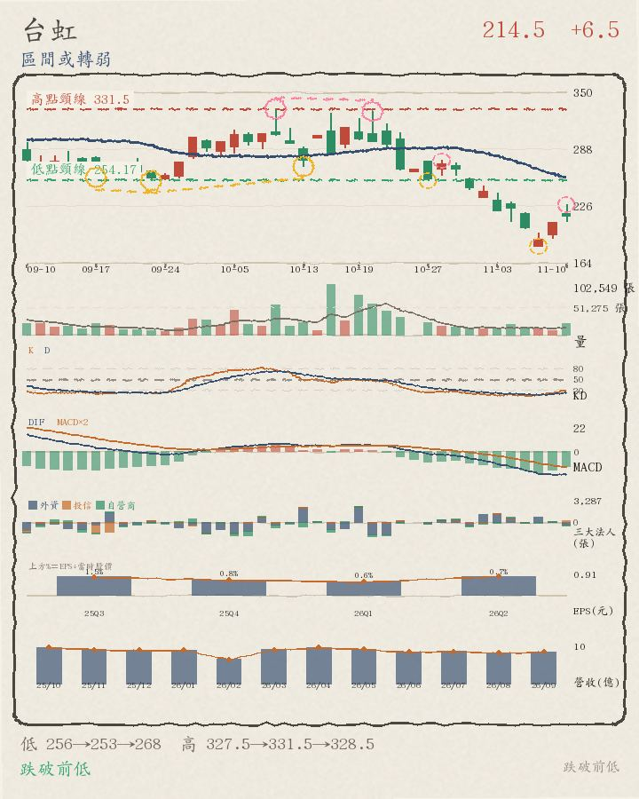
今天收紅、但成交量比平均少、跌破月線 256.525，跌破前一個轉折低點（高點頸線 331.5 還在收盤上方），轉折還沒走出明顯方向。
- 月線位置：收盤 214.5 在月線 256.525 之下；5 日線 207.3 也在月線之下（短均在下）；月線走平或向下、5 日線走平或向下
- 量能：成交量是 20 日均量的 0.76 倍，比 20 日均量少很多；收紅但量縮，量價背離
- 關鍵價位：高點頸線 331.5 還沒突破、還在收盤上方 35.3%；最近轉折高點 328.5（低於 34.7%）；最近轉折低點 268.5（低於 20.1%）
- 轉折結構：低點 256.5、253、268.5 與高點 327.5、331.5、328.5 都沒有明顯遞增，屬於區間震盪或轉弱；還沒確認的轉折低點 10-27 253、11-06 181.5；還沒確認的轉折高點 10-28 275、11-10 227（圖上虛線小圈）
區間或轉弱 成交金額 42.41 億・全榜第 59 名（上市第 49 名）
好條件 3/4：跌破前低、在月線之下、月線下彎
不好條件 2/5：量價攻擊（收紅＋大量）、外資賣超
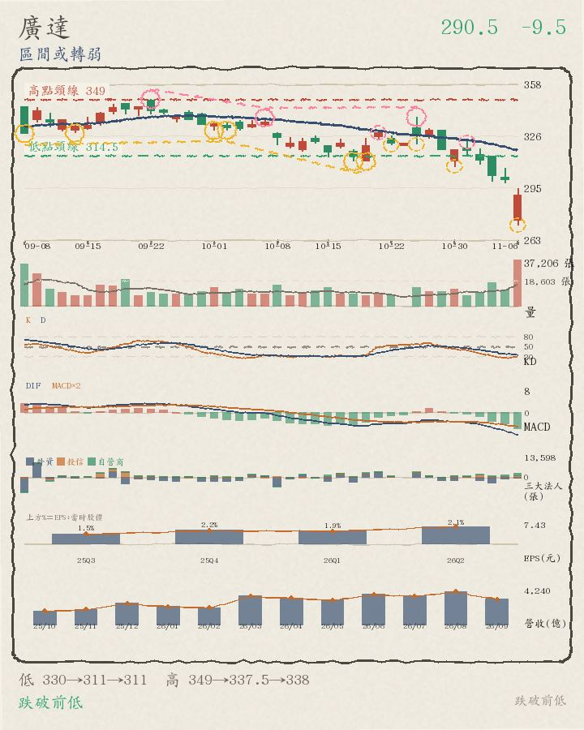
今天帶量收紅、跌破月線 315.15，跌破前一個轉折低點（高點頸線 349 還在收盤上方），轉折還沒走出明顯方向。
- 月線位置：收盤 298.5 在月線 315.15 之下；5 日線 297.6 也在月線之下（短均在下）；月線走平或向下、5 日線走平或向下
- 量能：成交量是 20 日均量的 1.08 倍，比 20 日均量大一些；收紅又量增，量價配合
- 關鍵價位：高點頸線 349 還沒突破、還在收盤上方 14.5%；最近轉折高點 338（低於 11.7%）；最近轉折低點 311（低於 4.0%）
- 轉折結構：低點 330、311、311 與高點 349、337.5、338 都沒有明顯遞增，屬於區間震盪或轉弱；還沒確認的轉折低點 10-30 308、11-06 272；還沒確認的轉折高點 11-09 304、11-10 304（圖上虛線小圈）
區間或轉弱 成交金額 40.41 億・全榜第 60 名（上市第 50 名）
好條件 3/4：跌破前低、在月線之下、月線下彎
不好條件 2/5：量價攻擊（收紅＋大量）、外資賣超
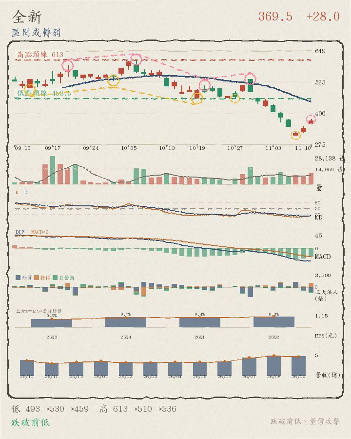
今天帶量收紅、跌破月線 446.625，跌破前一個轉折低點（高點頸線 613 還在收盤上方），轉折還沒走出明顯方向。
- 月線位置：收盤 369.5 在月線 446.625 之下；5 日線 352 也在月線之下（短均在下）；月線走平或向下、5 日線走平或向下
- 量能：成交量是 20 日均量的 1.44 倍，比 20 日均量大不少；收紅又量增，量價配合
- 關鍵價位：高點頸線 613 還沒突破、還在收盤上方 39.7%；最近轉折高點 536（低於 31.1%）；最近轉折低點 459（低於 19.5%）
- 轉折結構：低點 493、530、459 與高點 613、510、536 都沒有明顯遞增，屬於區間震盪或轉弱；還沒確認的轉折低點 10-27 458、11-06 311.5；還沒確認的轉折高點 11-10 375.5（圖上虛線小圈）
底部墊高、未過前高 成交金額 213.73 億・全榜第 9 名（上櫃第 1 名）
好條件 2/4：在月線之下、月線下彎
不好條件 1/5：外資賣超
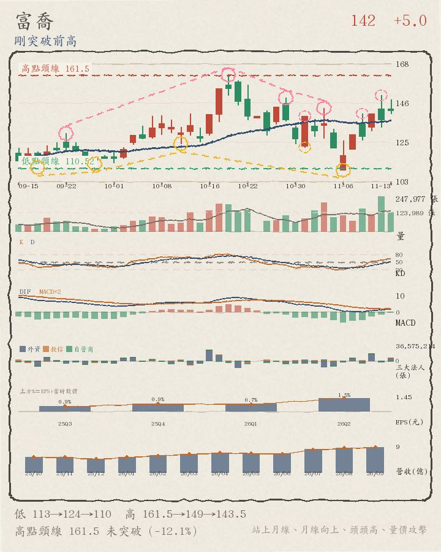
今天帶量收黑、跌破月線 135.2，離高點頸線 161.5 還差 20.7%，底部還在墊高（但高點沒同步創高）。
- 月線位置：收盤 128 在月線 135.2 之下；5 日線 126.2 也在月線之下（短均在下）；月線走平或向下、5 日線走平或向下
- 量能：成交量是 20 日均量的 1.42 倍，比 20 日均量大不少；收黑卻量增，量價背離
- 關鍵價位：高點頸線 161.5 還沒突破，差 20.7%；最近轉折高點 143.5（低於 10.8%）；最近轉折低點 124（高於 3.2%）
- 轉折結構：低點 111、113、124 墊高 11.7%（底底高），但高點 161.5、149、143.5 沒有同步創高；還沒確認的轉折低點 11-02 122、11-06 109.5；還沒確認的轉折高點 11-02 139、11-10 140.5（圖上虛線小圈）
區間或轉弱 成交金額 190.48 億・全榜第 14 名（上櫃第 2 名）
好條件 3/4：跌破前低、在月線之下、月線下彎
不好條件 2/5：量價攻擊（收紅＋大量）、外資賣超
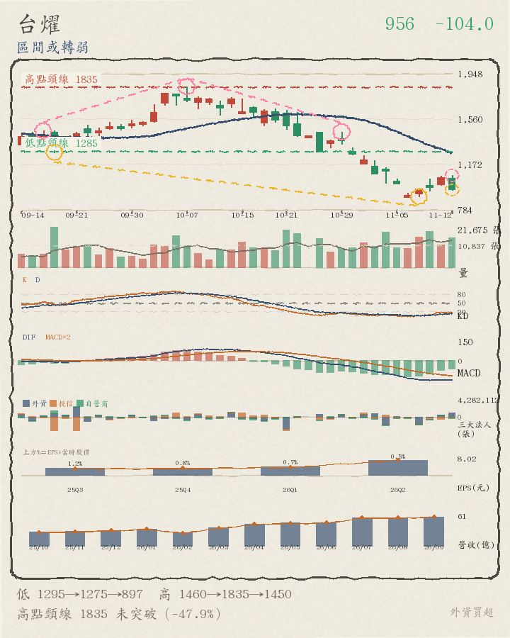
今天帶量收紅、跌破月線 1336.5，跌破前一個轉折低點（高點頸線 1835 還在收盤上方），轉折還沒走出明顯方向。
- 月線位置：收盤 982 在月線 1336.5 之下；5 日線 994 也在月線之下（短均在下）；月線走平或向下、5 日線走平或向下
- 量能：成交量是 20 日均量的 1.63 倍，比 20 日均量大不少；收紅又量增，量價配合
- 關鍵價位：高點頸線 1835 還沒突破、還在收盤上方 46.5%；最近轉折高點 1450（低於 32.3%）；最近轉折低點 1275（低於 23.0%）
- 轉折結構：低點 1395、1295、1275 與高點 1460、1835、1450 都沒有明顯遞增，屬於區間震盪或轉弱；還沒確認的轉折低點 10-27 1280、11-09 897；還沒確認的轉折高點 10-27 1450、11-10 1050（圖上虛線小圈）
區間或轉弱 成交金額 140.31 億・全榜第 17 名（上櫃第 3 名）
好條件 3/4：跌破前低、在月線之下、月線下彎
不好條件 2/5：量價攻擊（收紅＋大量）、外資賣超
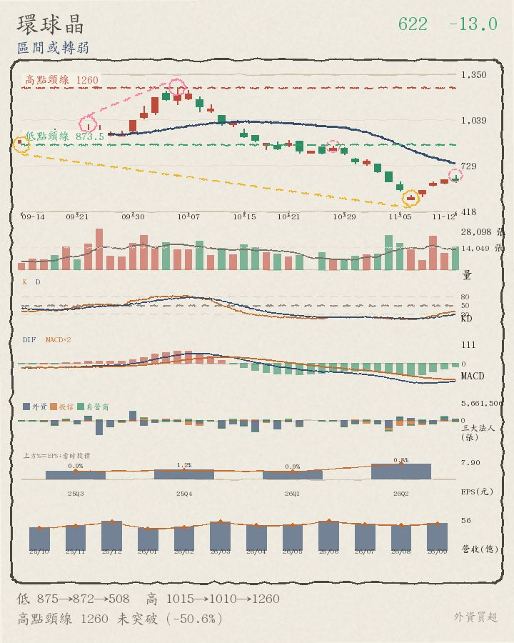
今天帶量收紅、跌破月線 783.3，跌破前一個轉折低點（高點頸線 1260 還在收盤上方），轉折還沒走出明顯方向。
- 月線位置：收盤 612 在月線 783.3 之下；5 日線 574 也在月線之下（短均在下）；月線走平或向下、5 日線走平或向下
- 量能：成交量是 20 日均量的 2.03 倍，比 20 日均量大不少；收紅又量增，量價配合
- 關鍵價位：高點頸線 1260 還沒突破、還在收盤上方 51.4%；最近轉折高點 1260（低於 51.4%）；最近轉折低點 872（低於 29.8%）
- 轉折結構：低點 931、875、872 與高點 1015、1010、1260 都沒有明顯遞增，屬於區間震盪或轉弱；還沒確認的轉折低點 10-27 807、11-06 508；還沒確認的轉折高點 10-28 860、11-10 619（圖上虛線小圈）
區間或轉弱 成交金額 121.15 億・全榜第 19 名（上櫃第 4 名）
好條件 3/4：跌破前低、在月線之下、月線下彎
不好條件 2/5：量價攻擊（收紅＋大量）、外資賣超
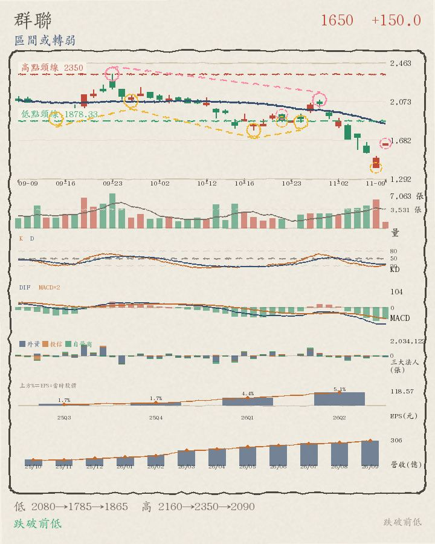
今天帶量收紅、跌破月線 1831，跌破前一個轉折低點（高點頸線 2350 還在收盤上方），轉折還沒走出明顯方向。
- 月線位置：收盤 1675 在月線 1831 之下；5 日線 1619 也在月線之下（短均在下）；月線走平或向下、5 日線走平或向下
- 量能：成交量是 20 日均量的 2.48 倍，比 20 日均量大不少；收紅又量增，量價配合
- 關鍵價位：高點頸線 2350 還沒突破、還在收盤上方 28.7%；最近轉折高點 2090（低於 19.9%）；最近轉折低點 1865（低於 10.2%）
- 轉折結構：低點 2080、1785、1865 與高點 2160、2350、2090 都沒有明顯遞增，屬於區間震盪或轉弱；還沒確認的轉折低點 11-06 1405、11-10 1630；還沒確認的轉折高點 11-10 1760（圖上虛線小圈）
區間或轉弱 成交金額 107.7 億・全榜第 25 名（上櫃第 5 名）
好條件 4/4：跌破前低、在月線之下、月線下彎、外資買超
不好條件 1/5：量價攻擊（收紅＋大量）
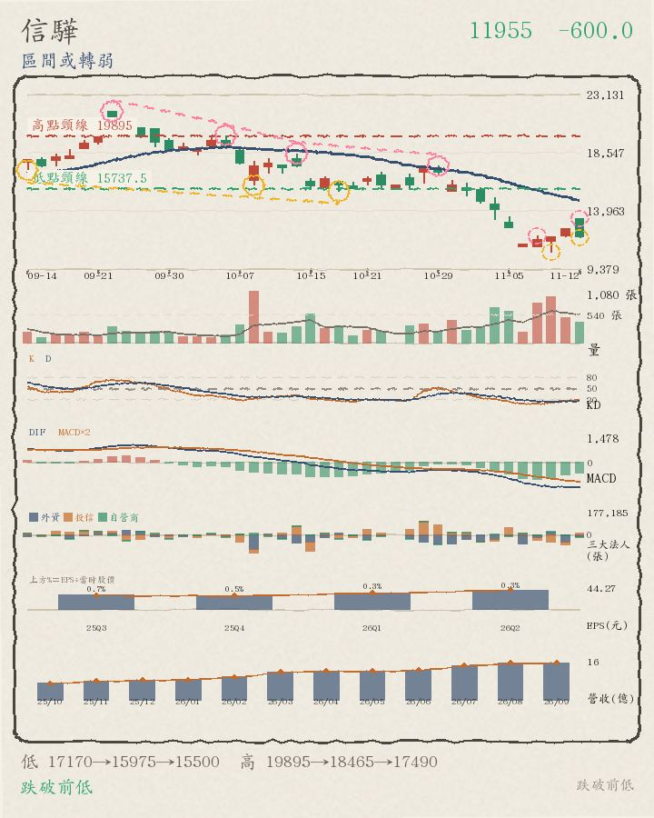
今天帶量收紅、跌破月線 15299.2，跌破前一個轉折低點（高點頸線 19895 還在收盤上方），轉折還沒走出明顯方向。
- 月線位置：收盤 11935 在月線 15299.2 之下；5 日線 12336 也在月線之下（短均在下）；月線走平或向下、5 日線走平或向下
- 量能：成交量是 20 日均量的 2.75 倍，比 20 日均量大不少；收紅又量增，量價配合
- 關鍵價位：高點頸線 19895 還沒突破、還在收盤上方 40.0%；最近轉折高點 17490（低於 31.8%）；最近轉折低點 15500（低於 23.0%）
- 轉折結構：低點 17170、15975、15500 與高點 19895、18465、17490 都沒有明顯遞增，屬於區間震盪或轉弱；還沒確認的轉折低點 10-27 15800、11-10 10710；還沒確認的轉折高點 11-09 11990（圖上虛線小圈）
區間或轉弱 成交金額 103.84 億・全榜第 28 名（上櫃第 6 名）
好條件 3/4：在月線之下、月線下彎、外資買超
不好條件 0/5：無
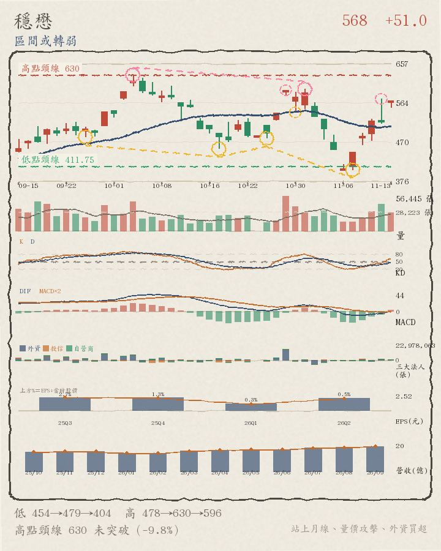
今天收紅、但成交量比平均少、跌破月線 508.35，離高點頸線 630 還差 23.1%，轉折還沒走出明顯方向。
- 月線位置：收盤 484.5 在月線 508.35 之下；5 日線 457.8 也在月線之下（短均在下）；月線走平或向下、5 日線走平或向下
- 量能：成交量是 20 日均量的 0.94 倍，比 20 日均量少一些；收紅但量縮，量價背離
- 關鍵價位：高點頸線 630 還沒突破，差 23.1%；最近轉折高點 596（低於 18.7%）；最近轉折低點 479（高於 1.1%）
- 轉折結構：低點 482、454、479 與高點 478、630、596 都沒有明顯遞增，屬於區間震盪或轉弱；還沒確認的轉折低點 10-30 541、11-09 403.5；還沒確認的轉折高點 10-29 594、11-10 491（圖上虛線小圈）
區間或轉弱 成交金額 80.01 億・全榜第 34 名（上櫃第 7 名）
好條件 3/4：跌破前低、在月線之下、月線下彎
不好條件 2/5：量價攻擊（收紅＋大量）、外資賣超
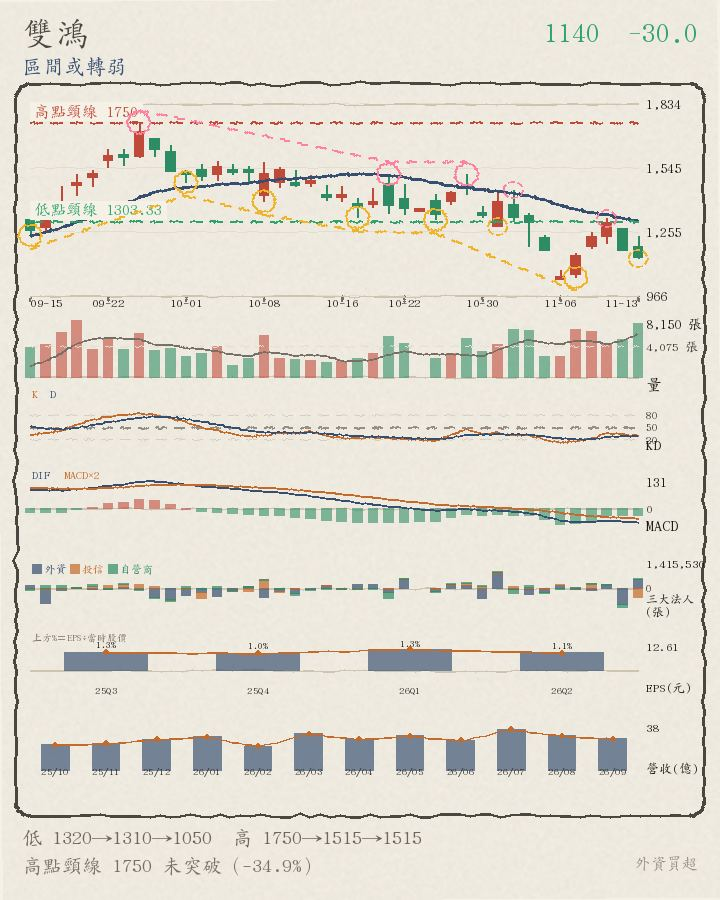
今天帶量收紅、跌破月線 1343，跌破前一個轉折低點（高點頸線 1750 還在收盤上方），轉折還沒走出明顯方向。
- 月線位置：收盤 1235 在月線 1343 之下；5 日線 1182 也在月線之下（短均在下）；月線走平或向下、5 日線走平或向下
- 量能：成交量是 20 日均量的 1.70 倍，比 20 日均量大不少；收紅又量增，量價配合
- 關鍵價位：高點頸線 1750 還沒突破、還在收盤上方 29.4%；最近轉折高點 1515（低於 18.5%）；最近轉折低點 1310（低於 5.7%）
- 轉折結構：低點 1395、1320、1310 與高點 1750、1515、1515 都沒有明顯遞增，屬於區間震盪或轉弱；還沒確認的轉折低點 11-02 1280、11-09 1050；還沒確認的轉折高點 11-03 1445、11-10 1255（圖上虛線小圈）
區間或轉弱 成交金額 50.48 億・全榜第 53 名（上櫃第 8 名）
好條件 4/4：跌破前低、在月線之下、月線下彎、外資買超
不好條件 1/5：量價攻擊（收紅＋大量）

今天帶量收紅、跌破月線 194.875，跌破前一個轉折低點（高點頸線 238 還在收盤上方），轉折還沒走出明顯方向。
- 月線位置：收盤 169.5 在月線 194.875 之下；5 日線 160 也在月線之下（短均在下）；月線走平或向下、5 日線走平或向下
- 量能：成交量是 20 日均量的 1.25 倍，比 20 日均量大不少；收紅又量增，量價配合
- 關鍵價位：高點頸線 238 還沒突破、還在收盤上方 28.8%；最近轉折高點 223（低於 24.0%）；最近轉折低點 194.5（低於 12.9%）
- 轉折結構：低點 208、211、194.5 與高點 238、217、223 都沒有明顯遞增，屬於區間震盪或轉弱；還沒確認的轉折低點 10-27 199.5、11-06 142；還沒確認的轉折高點 11-10 171.5（圖上虛線小圈）
區間或轉弱 成交金額 45.44 億・全榜第 57 名（上櫃第 9 名）
好條件 3/4：跌破前低、在月線之下、外資買超
不好條件 1/5：月線向上

今天帶量收黑、跌破月線 136.225，跌破前一個轉折低點（高點頸線 154.5 還在收盤上方），轉折還沒走出明顯方向。
- 月線位置：收盤 127 在月線 136.225 之下；5 日線 131 也在月線之下（短均在下）；月線向上、5 日線走平或向下
- 量能：成交量是 20 日均量的 1.60 倍，比 20 日均量大不少；收黑卻量增，量價背離
- 關鍵價位：高點頸線 154.5 還沒突破、還在收盤上方 17.8%；最近轉折高點 145（低於 12.4%）；最近轉折低點 129.5（低於 1.9%）
- 轉折結構：低點 110、129、129.5 與高點 154.5、144.5、145 都沒有明顯遞增，屬於區間震盪或轉弱；還沒確認的轉折低點 11-06 118.5、11-10 126；還沒確認的轉折高點 11-03 137.5、11-10 144.5（圖上虛線小圈）
區間或轉弱 成交金額 43.48 億・全榜第 58 名（上櫃第 10 名）
好條件 1/4：月線下彎
不好條件 2/5：站上月線、外資賣超
今天帶量收黑、站上月線 294.8，離高點頸線 468 還差 33.9%，轉折還沒走出明顯方向。
- 月線位置：收盤 309.5 在月線 294.8 之上；5 日線 293.2 也在月線之下（短均在下）；月線走平或向下、5 日線向上
- 量能：成交量是 20 日均量的 4.11 倍，比 20 日均量大不少；收黑卻量增，量價背離
- 關鍵價位：高點頸線 468 還沒突破，差 33.9%；最近轉折高點 344（低於 10.0%）；最近轉折低點 239.5（高於 29.2%）
- 轉折結構：低點 264.5、270、239.5 與高點 468、334.5、344 都沒有明顯遞增，屬於區間震盪或轉弱；還沒確認的轉折低點 11-06 245.5；還沒確認的轉折高點 11-05 302.5、11-10 340（圖上虛線小圈）
區間或轉弱 成交金額 36.61 億・全榜第 61 名（上櫃第 11 名）
好條件 3/4：跌破前低、在月線之下、月線下彎
不好條件 2/5：量價攻擊（收紅＋大量）、外資賣超
今天帶量收紅、跌破月線 1078.8，跌破前一個轉折低點（高點頸線 1535 還在收盤上方），轉折還沒走出明顯方向。
- 月線位置：收盤 978 在月線 1078.8 之下；5 日線 957.2 也在月線之下（短均在下）；月線走平或向下、5 日線走平或向下
- 量能：成交量是 20 日均量的 2.68 倍，比 20 日均量大不少；收紅又量增，量價配合
- 關鍵價位：高點頸線 1535 還沒突破、還在收盤上方 36.3%；最近轉折高點 1205（低於 18.8%）；最近轉折低點 1065（低於 8.2%）
- 轉折結構：低點 1095、1065、1065 與高點 1535、1375、1205 都沒有明顯遞增，屬於區間震盪或轉弱；還沒確認的轉折低點 11-06 851；還沒確認的轉折高點 11-10 1010（圖上虛線小圈）
區間或轉弱 成交金額 33.03 億・全榜第 62 名（上櫃第 12 名）
好條件 4/4：跌破前低、在月線之下、月線下彎、外資買超
不好條件 0/5：無

今天收紅、跌破月線 423.05，跌破前一個轉折低點（高點頸線 578 還在收盤上方），轉折還沒走出明顯方向。
- 月線位置：收盤 366 在月線 423.05 之下；5 日線 340.5 也在月線之下（短均在下）；月線走平或向下、5 日線走平或向下
- 量能：成交量是 20 日均量的 0.97 倍，跟 20 日均量差不多
- 關鍵價位：高點頸線 578 還沒突破、還在收盤上方 36.7%；最近轉折高點 510（低於 28.2%）；最近轉折低點 399.5（低於 8.4%）
- 轉折結構：低點 469.5、477、399.5 與高點 535、578、510 都沒有明顯遞增，屬於區間震盪或轉弱；還沒確認的轉折低點 10-30 399.5、11-06 301；還沒確認的轉折高點 11-03 428、11-10 366（圖上虛線小圈）
區間或轉弱 成交金額 30.69 億・全榜第 63 名（上櫃第 13 名）
好條件 4/4：跌破前低、在月線之下、月線下彎、外資買超
不好條件 1/5：量價攻擊（收紅＋大量）

今天帶量收紅、跌破月線 97.595，跌破前一個轉折低點（高點頸線 140 還在收盤上方），轉折還沒走出明顯方向。
- 月線位置：收盤 80.7 在月線 97.595 之下；5 日線 76.62 也在月線之下（短均在下）；月線走平或向下、5 日線走平或向下
- 量能：成交量是 20 日均量的 1.53 倍，比 20 日均量大不少；收紅又量增，量價配合
- 關鍵價位：高點頸線 140 還沒突破、還在收盤上方 42.4%；最近轉折高點 113（低於 28.6%）；最近轉折低點 103.5（低於 22.0%）
- 轉折結構：低點 104、100、103.5 與高點 140、140、113 都沒有明顯遞增，屬於區間震盪或轉弱；還沒確認的轉折低點 10-27 100.5、11-06 67.3；還沒確認的轉折高點 10-27 107.5、11-10 83.4（圖上虛線小圈）
區間或轉弱 成交金額 30.67 億・全榜第 64 名（上櫃第 14 名）
好條件 3/4：跌破前低、在月線之下、月線下彎
不好條件 1/5：外資賣超
今天收紅、但成交量比平均少、跌破月線 230.175，跌破前一個轉折低點（高點頸線 291.5 還在收盤上方），轉折還沒走出明顯方向。
- 月線位置：收盤 192 在月線 230.175 之下；5 日線 182.7 也在月線之下（短均在下）；月線走平或向下、5 日線走平或向下
- 量能：成交量是 20 日均量的 0.86 倍，比 20 日均量少一些；收紅但量縮，量價背離
- 關鍵價位：高點頸線 291.5 還沒突破、還在收盤上方 34.1%；最近轉折高點 279.5（低於 31.3%）；最近轉折低點 241.5（低於 20.5%）
- 轉折結構：低點 238、238、241.5 與高點 289.5、291.5、279.5 都沒有明顯遞增，屬於區間震盪或轉弱；還沒確認的轉折低點 10-28 234.5、11-06 162；還沒確認的轉折高點 10-27 261.5、11-10 198.5（圖上虛線小圈）
區間或轉弱 成交金額 28.88 億・全榜第 65 名（上櫃第 15 名）
好條件 3/4：跌破前低、在月線之下、月線下彎
不好條件 1/5：外資賣超
今天收紅、但成交量比平均少、跌破月線 4726.75，跌破前一個轉折低點（高點頸線 6160 還在收盤上方），轉折還沒走出明顯方向。
- 月線位置：收盤 4075 在月線 4726.75 之下；5 日線 3817 也在月線之下（短均在下）；月線走平或向下、5 日線走平或向下
- 量能：成交量是 20 日均量的 0.76 倍，比 20 日均量少很多；收紅但量縮，量價背離
- 關鍵價位：高點頸線 6160 還沒突破、還在收盤上方 33.8%；最近轉折高點 5150（低於 20.9%）；最近轉折低點 4995（低於 18.4%）
- 轉折結構：低點 5365、5090、4995 與高點 5860、6160、5150 都沒有明顯遞增，屬於區間震盪或轉弱；還沒確認的轉折低點 10-30 4390、11-06 3355；還沒確認的轉折高點 11-02 4790、11-10 4075（圖上虛線小圈）
區間或轉弱 成交金額 26.87 億・全榜第 66 名（上櫃第 16 名）
好條件 3/4：跌破前低、在月線之下、月線下彎
不好條件 1/5：外資賣超
今天帶量收黑、跌破月線 334.35，跌破前一個轉折低點（高點頸線 405.5 還在收盤上方），轉折還沒走出明顯方向。
- 月線位置：收盤 304.5 在月線 334.35 之下；5 日線 305.3 也在月線之下（短均在下）；月線走平或向下、5 日線走平或向下
- 量能：成交量是 20 日均量的 1.39 倍，比 20 日均量大不少；收黑卻量增，量價背離
- 關鍵價位：高點頸線 405.5 還沒突破、還在收盤上方 24.9%；最近轉折高點 378.5（低於 19.6%）；最近轉折低點 328（低於 7.2%）
- 轉折結構：低點 327、328、328 與高點 405.5、385.5、378.5 都沒有明顯遞增，屬於區間震盪或轉弱；還沒確認的轉折低點 11-06 270、11-10 300.5；還沒確認的轉折高點 11-10 323（圖上虛線小圈）
高點墊高、底部不穩 成交金額 25.53 億・全榜第 67 名（上櫃第 17 名）
好條件 1/4：外資買超
不好條件 2/5：站上月線、月線向上
今天帶量收黑、站上月線 121.225，離高點頸線 147.5 還差 1.0%，高點還在墊高（但底部沒同步墊高）。
- 月線位置：收盤 146 在月線 121.225 之上；5 日線 143.1 也在月線之上（短均在上）；月線向上、5 日線向上
- 量能：成交量是 20 日均量的 7.86 倍，比 20 日均量大不少；收黑卻量增，量價背離
- 關鍵價位：高點頸線 147.5 還沒突破，差 1.0%；最近轉折高點 147.5（低於 1.0%）；最近轉折低點 92.3087（高於 58.2%）
- 轉折結構：高點 107、130.5、147.5 墊高 37.9%（頭頭高），但低點 96.8、90.5、92.3087 沒有同步墊高；還沒確認的轉折低點 11-04 128、11-06 125.5；還沒確認的轉折高點 11-05 160.5、11-10 162（圖上虛線小圈）
區間或轉弱 成交金額 22.91 億・全榜第 68 名（上櫃第 18 名）
好條件 4/4：跌破前低、在月線之下、月線下彎、外資買超
不好條件 0/5：無
今天收紅、但成交量比平均少、跌破月線 1236.65，跌破前一個轉折低點（高點頸線 1680 還在收盤上方），轉折還沒走出明顯方向。
- 月線位置：收盤 1025 在月線 1236.65 之下；5 日線 972.6 也在月線之下（短均在下）；月線走平或向下、5 日線走平或向下
- 量能：成交量是 20 日均量的 0.91 倍，比 20 日均量少一些；收紅但量縮，量價背離
- 關鍵價位：高點頸線 1680 還沒突破、還在收盤上方 39.0%；最近轉折高點 1360（低於 24.6%）；最近轉折低點 1180（低於 13.1%）
- 轉折結構：低點 1185、1180、1180 與高點 1270、1680、1360 都沒有明顯遞增，屬於區間震盪或轉弱；還沒確認的轉折低點 10-30 1135、11-06 864；還沒確認的轉折高點 11-02 1210、11-10 1045（圖上虛線小圈）
底部墊高、未過前高 成交金額 22.63 億・全榜第 69 名（上櫃第 19 名）
好條件 3/4：跌破前低、在月線之下、月線下彎
不好條件 2/5：量價攻擊（收紅＋大量）、外資賣超
今天帶量收紅、跌破月線 152.4，跌破前一個轉折低點（高點頸線 170 還在收盤上方），底部還在墊高（但高點沒同步創高）。
- 月線位置：收盤 132.5 在月線 152.4 之下；5 日線 129.5 也在月線之下（短均在下）；月線走平或向下、5 日線走平或向下
- 量能：成交量是 20 日均量的 1.15 倍，比 20 日均量大不少；收紅又量增，量價配合
- 關鍵價位：高點頸線 170 還沒突破、還在收盤上方 22.1%；最近轉折高點 170（低於 22.1%）；最近轉折低點 159（低於 16.7%）
- 轉折結構：低點 147、152.5、159 墊高 8.2%（底底高），但高點 170、170、170 沒有同步創高；還沒確認的轉折低點 10-30 141、11-06 113.5；還沒確認的轉折高點 11-10 141（圖上虛線小圈）
底部墊高、未過前高 成交金額 19.76 億・全榜第 70 名（上櫃第 20 名）
好條件 2/4：月線下彎、外資買超
不好條件 2/5：站上月線、量價攻擊（收紅＋大量）
今天帶量收紅、站上月線 137.65，離高點頸線 195 還差 22.1%，底部還在墊高（但高點沒同步創高）。
- 月線位置：收盤 152 在月線 137.65 之上；5 日線 143.5 也在月線之上（短均在上）；月線走平或向下、5 日線走平或向下
- 量能：成交量是 20 日均量的 2.87 倍，比 20 日均量大不少；收紅又量增，量價配合
- 關鍵價位：高點頸線 195 還沒突破，差 22.1%；最近轉折高點 168（低於 9.5%）；最近轉折低點 126.5（高於 20.2%）
- 轉折結構：低點 110、123.5、126.5 墊高 15.0%（底底高），但高點 195、195、168 沒有同步創高；還沒確認的轉折低點 11-06 128.5；還沒確認的轉折高點 11-05 155、11-06 155（圖上虛線小圈）